한 작은 귀족 가문에서 사내아이가 태어났다. 그 아이가 훗날 인류가 읽은 가장 거대한 시를 쓰리라고는 아무도 짐작하지 못했다.
단테 알리기에리는 1265년 5월에서 6월 사이, 토스카나의 도시 공화국 피렌체에서 태어났다. 정확한 날짜는 끝내 남지 않았다. 다만 그가 쌍둥이자리의 별 아래 태어났다고 『신곡』 천국편에서 직접 밝혔으므로, 학자들은 그 시기를 5월 하순에서 6월 중순으로 좁혀 본다. 그가 자신의 생을 세는 방식 자체가 이미 시였다. 『신곡』의 첫 행에서 그는 "우리 인생길의 한가운데에서"라고 노래했는데, 중세인이 생각한 한 생애의 길이를 일흔으로 보면 그 한가운데는 서른다섯이고, 신곡의 영적 여행이 1300년 봄에 시작된다고 본다면 그가 태어난 해는 자연히 1265년이 된다. 한 인간이 자기 출생 연도를 산수가 아니라 운율로 증명해 둔 셈이다.
아버지의 이름은 알리기에로 디 벨린초네 알리기에리였다. 가문은 피렌체의 하급 귀족, 이른바 소귀족 계층에 속했다. 황제파에 가까웠던 먼 조상의 흔적이 있었으나, 단테가 태어날 무렵의 알리기에리 가문은 교황파 진영 안에서 살아가는 평범한 도시 가문이었다. 토지에서 나오는 소작료와 약간의 돈놀이가 생계의 바탕이었다. 화려하지 않았으되 빈한하지도 않은, 도시 중산층과 귀족의 경계에 걸친 집안이었다. 단테는 훗날 자신의 작품에서 가문의 부유함이나 영광을 거의 자랑하지 않았는데, 도리어 천국편에서는 피렌체 귀족들의 허영과 졸부 근성을 신랄하게 꾸짖는다.
이름 단테는 본명 두란테(Durante)의 축약형이다. 두란테는 라틴어 두라레(durare), 곧 "견디다·지속하다"에서 온 말이다. 견디는 자라는 뜻을 품은 이름은 묘하게도 그의 평생을 예언했다. 그는 인생의 절반을 추방당한 자로 견디며 살았고, 끝내 고향으로 돌아가지 못한 채 견디다 죽었다. 이름이 운명을 앞질러 새겨진 듯한 이 우연을, 후대의 전기 작가들은 거듭 음미했다. 단테 자신은 자기 이름의 뜻을 직접 풀이한 적이 없으나, 그를 흠모한 후대인들은 "견딤"이야말로 그의 생을 요약하는 한 단어라 여겼다.
그는 어린 나이에 어머니를 잃었다. 어머니 벨라(가브리엘라로도 전한다)는 단테가 대여섯 살 무렵 세상을 떠났고, 아버지는 곧 라파 디 키아리시모 치알루피와 재혼해 이복 형제들을 두었다. 일찍 찾아온 상실은 어린 단테의 내면에 작은 어둠을 남겼을 것이다. 훗날 그의 시 세계 전체를 관통하는 주제 가운데 하나가 "잃어버린 이를 다시 만나는 여행"이라는 점은, 이 유년의 결핍과 무관하지 않다는 해석도 있다. 어머니의 죽음, 사랑하던 여인의 죽음, 그리고 고향의 상실. 단테의 생은 거듭되는 상실 위에 세워진 시였다.
아버지 알리기에로에 대해서도 단테는 침묵에 가깝다. 아버지는 환전과 대금업에 종사했던 것으로 보이는데, 당시 교회가 이자 놀이를 죄악시했던 점을 떠올리면 단테가 아버지를 작품에서 거의 다루지 않은 이유를 짐작할 수 있다. 흥미롭게도 단테는 『신곡』 지옥편에서 고리대금업자들을 가혹하게 단죄하는데, 일부 학자는 이것을 아버지의 직업에 대한 무의식적 거리 두기로 읽기도 한다. 다만 이는 추측의 영역이다. 단테가 자기 가족에 대해 남긴 기록이 워낙 적어, 그의 유년은 대체로 침묵과 추정의 안개에 싸여 있다.
단테가 살던 시대의 피렌체에서 한 사내아이로 태어난다는 것은, 곧 도시의 정치적 운명에 송두리째 얽매여 산다는 뜻이었다. 코무네는 시민의 자치 공동체였으나, 그 자치는 끊임없는 파벌 싸움으로 얼룩져 있었다. 한 가문의 흥망이 곧 그에 속한 모든 사람의 흥망이었고, 어느 편에 서느냐가 생사를 갈랐다. 단테는 이 위태로운 도시에서 한 작은 가문의 아들로 태어나, 장차 그 도시의 정치에 휘말렸다가 끝내 추방당할 운명이었다. 그의 생애는 한 개인의 이야기인 동시에, 분열된 중세 이탈리아 도시 국가의 비극을 압축한 한 편의 드라마였다.
단테가 받은 교육에 대해서는 기록이 드물다. 그러나 그의 작품이 증언하는 학식은 방대하다. 그는 라틴 문법과 수사학, 논리학을 익혔고, 베르길리우스·오비디우스·루카누스·스타티우스 같은 로마 시인들을 깊이 읽었다. 무엇보다 그는 당대 피렌체의 학자이자 정치가였던 브루네토 라티니에게 큰 영향을 받았다. 라티니는 백과사전적 저작 『보물의 책』을 쓴 인물로, 단테에게 "사람이 어떻게 영원해지는가"를 가르친 스승이었다. 단테는 훗날 『신곡』 지옥편에서 라티니를 지옥에 둘 수밖에 없었으면서도, 그를 향해 "당신은 내게 사람이 영원해지는 법을 가르쳐 주셨다"고 절절한 경의를 표한다. 스승을 단죄하는 자리에서마저 사랑을 거두지 않은 것이다.
피렌체라는 도시 자체가 단테의 첫 번째 스승이었다. 13세기 후반의 피렌체는 모직물 산업과 은행업으로 유럽에서 가장 부유한 도시 중 하나였다. 1252년 주조된 금화 피오리노는 국제 무역의 기축 통화였고, 도시의 상인들은 잉글랜드 왕실에까지 돈을 빌려주었다. 그러나 이 눈부신 번영의 이면에는 끝없는 정쟁이 도사리고 있었다. 부와 권력을 둘러싼 가문들의 다툼, 황제파와 교황파의 대립, 그리고 곧 닥쳐올 흑당과 백당의 분열. 단테는 이 화려하고도 위태로운 도시의 공기를 마시며 자랐고, 그 도시가 끝내 그를 내쫓을 것이었다.
그가 자란 13세기는 흔히 "중세의 가을"이라 불리지만, 실은 새로운 시대가 잉태되던 봄이기도 했다. 화가 조토 디 본도네가 평면적인 비잔틴 양식을 깨고 인물에 입체와 감정을 불어넣기 시작했고, 단테 자신도 천국편에서 조토가 옛 거장 치마부에의 명성을 가렸다고 노래하며 이 변화를 증언한다. 대학이 곳곳에 세워지고, 아리스토텔레스의 철학이 아랍 세계를 거쳐 다시 유럽에 들어왔으며, 탁발 수도회가 도시의 거리에서 새로운 신앙을 전파했다. 단테는 바로 이 격동의 한복판에서 자랐고, 그의 『신곡』은 저무는 중세와 떠오르는 르네상스가 한 작품 안에서 만나는 거대한 분수령이 되었다.
우리 인생길의 한가운데에서, 나는 어두운 숲속에 있었다. 곧은 길을 잃어버렸기 때문이다.
단테, 『신곡』 지옥편 제1곡 1-3행
13세기 피렌체
인구약 10만 명, 당시 유럽 최대급 도시
경제모직물 가공·환전·은행업의 중심
화폐1252년 주조된 금화 피오리노, 국제 결제 통화
정체코무네(자치 도시 공화국), 길드 중심 자치
약점황제파-교황파, 다시 흑당-백당의 만성 내분
곁가지 1 — 사라진 생가와 "단테의 집"
오늘날 피렌체 산타 마르게리타 거리 부근에 "카사 디 단테(단테의 집)"라는 박물관이 서 있지만, 이 건물은 단테가 실제로 살던 생가가 아니라 20세기 초에 중세풍으로 복원·재건된 기념관이다. 단테 가문의 본래 집들은 흑당 정권이 들어선 뒤 몰수되고 허물어졌다. 한 시인을 추방한 도시가 600년 뒤 그 시인의 "집"을 관광 명소로 되살린 셈인데, 정작 진짜 생가의 정확한 위치조차 학자들 사이에 이견이 있다. 우리가 보는 "단테의 집"은 시인의 실제 거처라기보다, 후대가 빚어낸 단테 신화의 한 무대인 셈이다.
[Source] Boccaccio, 『Trattatello in laude di Dante』; Museo Casa di Dante 공식 안내; R. Lewis, 『Dante's Florence』.
곁가지 2 — 천국에서 만난 조상 카치아구이다
단테는 자기 가문의 뿌리를 『신곡』 천국편 화성천에서 직접 그린다. 그는 그곳에서 십자군 원정에 참가했다가 전사한 고조부 카치아구이다를 만난다. 카치아구이다는 단테에게 옛 피렌체의 소박하고 청렴했던 시절을 회고하며, 부와 사치로 타락한 당대 피렌체를 한탄한다. 또한 그는 단테의 미래, 곧 추방의 고난을 예언한다. 한 시인이 자기 조상을 천국에 올려 가문의 명예를 회복하고, 동시에 자기 운명의 의미를 그 입을 빌려 설명하게 한 이 장면은, 자전과 신학이 한자리에서 만나는 『신곡』의 백미 가운데 하나다.
[Source] Dante, 『Paradiso』 XV-XVII곡; J. Took, 『Dante』(2020).
이탈리아
피렌체는 인구 약 10만의 거대 코무네였다. 모직과 은행으로 부를 쌓았으나, 황제파와 교황파의 다툼이 도시의 골수까지 파고들어 있었다. 단테가 태어나기 직전인 1260년 몬타페르티 전투에서 황제파가 교황파를 몰살에 가깝게 무찔렀고, 그 피의 기억이 한 세대 내내 도시를 짓눌렀다.
몽골·동방
같은 무렵 동방에서는 쿠빌라이 칸이 1271년 원(元)을 세운다. 마르코 폴로는 1271년 동방을 향해 떠나, 단테가 청년이 될 무렵 칸의 궁정에 머물고 있었다.
고려
고려는 원의 부마국 시기에 들어서 있었다. 1274년 충렬왕이 즉위했고, 같은 해 여몽 연합군의 1차 일본 원정이 있었다.
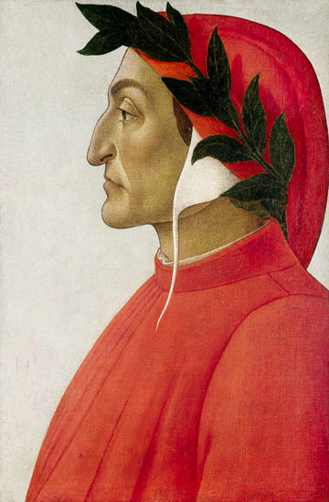
단테의 초상 · 산드로 보티첼리 화풍, 1495년경 · 매부리코와 월계관은 이후 단테 도상의 표준이 되었다 [Wikimedia · Public Domain]
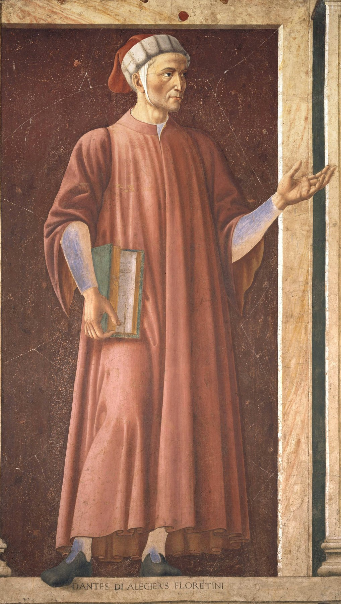
저명인사 연작 속 단테 · 안드레아 델 카스타뇨, 1448-51 · 우피치 미술관 [Wikimedia · Public Domain]
II
1274 · 1283 · 피렌체
아홉 살의 베아트리체
강의 듣기
아홉 살 소년이 아홉 살 소녀를 처음 보았다. 그 한 번의 시선이 한 사람의 전 생애와 서양 문학의 한 갈래를 결정했다.
1274년 5월 초하루, 단테는 아버지의 친구 폴코 포르티나리의 집에서 열린 봄 잔치에 초대받았다. 그의 나이 아홉 살. 그 집에서 그는 한 소녀를 보았다. 폴코의 딸 비체, 곧 베아트리체였다. 그녀 역시 아홉 살이었다. 단테는 훗날 첫 책 『새로운 인생(Vita Nuova)』에서 이 순간을 우주적 사건처럼 기록했다. 그날 그녀는 핏빛이 도는 진홍의 옷을 입고 있었고, 그 모습을 본 순간 그의 심장 가장 깊은 방에 깃든 생명의 영(靈)이 떨리며 외쳤다고 한다. "보라, 나보다 강한 신이 와서 나를 다스리리라."
여기서 분명히 해 둘 사실이 있다. 단테와 베아트리체는 평생 거의 만나지 않았다. 같은 도시에 살았으되 두 사람이 사사로이 대화를 나눈 흔적은 없다시피 하다. 베아트리체는 부유한 은행가 시모네 데 바르디와 결혼했고, 단테 역시 가문끼리 정해 둔 약혼에 따라 젬마 도나티와 혼인했다. 그러므로 단테가 평생 노래한 사랑은 현실의 연애가 아니라, 멀리서 우러러보는 사랑, 거의 종교에 가까운 흠모였다. 이 점을 모르고 『새로운 인생』을 읽으면 단테를 한낱 짝사랑에 빠진 청년으로 오해하기 쉽다. 그러나 그가 그린 것은 한 여인을 통해 신에게 이르는 영혼의 사다리였다.
이 사랑의 형식은 단테 혼자 발명한 것이 아니다. 12세기 프로방스의 음유시인들에게서 시작되어 유럽 전역으로 퍼진 궁정풍 사랑(아무르 쿠르투아)의 전통이 그 토양이었다. 기사가 손닿을 수 없는 귀부인을 섬기듯 사랑하는 이 양식을, 그러나 단테는 한 단계 더 높은 자리로 끌어올렸다. 그에게 베아트리체는 욕망의 대상이 아니라 신의 사랑이 비치는 거울이었다. 그녀를 바라보는 일은 곧 신을 향해 한 걸음 다가서는 일이었다. 통속적 연애 시가 구원의 신학으로 변모하는 순간이 거기 있었다.
두 번째 결정적 만남은 그로부터 꼭 9년 뒤, 단테가 열여덟이던 1283년경에 찾아왔다. 어느 거리에서 흰옷을 입은 베아트리체가 단테에게 가볍게 인사를 건넸다. 그저 한마디 안부였을 그 인사를 단테는 평생 잊지 못했다. 그는 집으로 돌아와 환희에 찬 환상을 보고 첫 소네트를 지었으며, 이 시를 당대 시인들에게 돌려 응답을 청했다. 이때 답시를 보내온 이가 귀도 카발칸티였고, 두 사람은 평생의 벗이 된다. 베아트리체라는 이름이 거듭 숫자 9와 얽히는 것 또한 우연이 아니라고 단테는 믿었다. 9는 삼위일체(3)의 제곱이며, 그녀 자체가 하나의 기적이라는 신비주의적 셈법이었다.
단테가 베아트리체를 노래한 방식에는 당대 시 문화의 독특한 관습이 깔려 있다. 그는 자신의 진짜 마음을 숨기기 위해 일부러 다른 여인을 사랑하는 척 "가림막 여인(donna schermo)"을 내세웠다고 『새로운 인생』에서 고백한다. 사람들이 그 가림막 여인을 진짜 연인으로 오해할 정도로 소문이 퍼지자, 베아트리체가 단테에게 인사를 거두기까지 했다. 이 작은 사건이 단테에게는 세상이 무너지는 고통이었다. 한 여인의 인사 한 번에 천국과 지옥을 오가는 이 예민한 감수성이야말로 돌체 스틸 노보 시인의 전형이었다.
흥미로운 것은 단테가 베아트리체를 그릴 때 거의 육체적 묘사를 하지 않는다는 점이다. 그녀의 머리 색이나 이목구비 대신, 그가 노래하는 것은 그녀가 지나갈 때 사람들의 마음에 일어나는 변화, 그녀의 인사가 주는 구원의 감각, 그녀 앞에서 자신이 느끼는 떨림이다. 베아트리체는 점점 한 개인이라기보다 하나의 빛, 하나의 은총의 통로가 되어 간다. 이 추상화의 과정이 곧 『새로운 인생』에서 『신곡』으로 이어지는 다리였다. 현실의 소녀가 신학적 상징으로 변모하면서, 단테의 사랑시는 인류가 가진 가장 높은 형이상학적 시 가운데 하나가 되었다.
이러한 사랑의 관념은 당시 유럽 전역에 퍼져 있던 마리아 숭배와도 깊이 얽혀 있다. 12세기 이래 성모 마리아에 대한 신심이 폭발적으로 자라났고, 고딕 대성당들이 "노트르담(우리의 귀부인)"이라는 이름으로 마리아에게 헌정되었다. 손닿을 수 없는 천상의 귀부인을 우러러보는 종교적 감수성과, 손닿을 수 없는 지상의 귀부인을 사랑하는 궁정풍 시가 한 시대의 두 얼굴이었던 것이다. 단테는 이 둘을 하나로 녹여, 한 여인에 대한 사랑을 곧장 신에 대한 사랑으로 끌어올렸다. 베아트리체를 향한 그의 흠모는 결국 성모를 향한 신심과 같은 방향을 가리키고 있었다. 천국편의 마지막에서 단테를 신 앞으로 인도하는 마지막 기도가 성모께 바쳐진다는 사실은 이 점을 분명히 한다.
그날부터, 사랑이 내 영혼을 완전히 다스렸노라고 나는 말한다.
단테, 『새로운 인생』 제2장
『새로운 인생』 속의 두 만남
첫 만남1274년, 둘 다 9세, 진홍 옷
둘째 만남1283년경, 18세, 흰옷의 인사
형식시 31편 + 산문 해설(프로시메트룸)
상징수9 = 3²(삼위일체) · 기적의 수
집필약 1293-1294, 토스카나 속어
곁가지 1 — 베아트리체는 실존했는가
대부분의 학자는 베아트리체를 1265년경 태어나 1287년 시모네 데 바르디와 혼인한 실존 인물 비체 디 폴코 포르티나리로 본다. 이 동일시는 단테보다 한 세대 뒤의 보카치오가 처음 명시했다. 그러나 일부 비평가는 그녀를 순전히 알레고리적 인물, 곧 신학·철학·은총의 화신으로 읽어야 한다고 주장해 왔다. 진실은 아마 둘 사이에 있을 것이다. 실존하는 소녀가 있었으되, 단테의 펜이 그녀를 구원의 상징으로 변형시켰다는 것이다. 한 실존 인물이 어떻게 문학적 상징으로 승화되는가를 보여 주는 가장 유명한 사례다.
[Source] Dante, 『Vita Nuova』; Boccaccio, 『Trattatello in laude di Dante』; C. Singleton, 『An Essay on the Vita Nuova』.
곁가지 2 — 침묵 속의 아내 젬마 도나티
단테는 열두 살 무렵 젬마 디 마네토 도나티와 약혼하고 1285년경 혼인했다. 두 사람 사이에는 야코포·피에트로·안토니아 등 여러 자녀가 있었다. 그런데 단테는 자신의 어떤 작품에서도 아내 젬마의 이름을 단 한 번도 언급하지 않는다. 한 여인은 시의 천국에 올려 영원히 노래하고, 한 여인은 침묵으로 가렸다. 후대 사람들은 이 대조를 두고 단테에게 가혹한 평을 내리기도 했으나, 정략혼이 보편이던 시대에 사적 감정을 작품에 드러내지 않는 절제로 읽는 견해도 있다. 흥미롭게도 젬마는 도나티 가문 출신으로, 그 가문에는 흑당의 우두머리 코르소 도나티가 있었다. 아내의 혈족이 곧 단테를 추방으로 몰아넣은 정파였던 셈이다.
[Source] Boccaccio, 『Trattatello』; J. Took, 『Dante』(2020).
잉글랜드
같은 무렵 잉글랜드에서는 에드워드 1세가 웨일스를 정복(1283)하고 의회 제도의 기틀을 다지고 있었다. 영어는 아직 문학어의 지위를 얻지 못한 채, 궁정에서는 프랑스어, 학문에서는 라틴어가 군림했다.
일본
1281년 여몽 연합군의 2차 일본 원정이 태풍으로 좌절되었다. 가마쿠라 막부의 호조 가문이 권력을 쥐고 있었다.
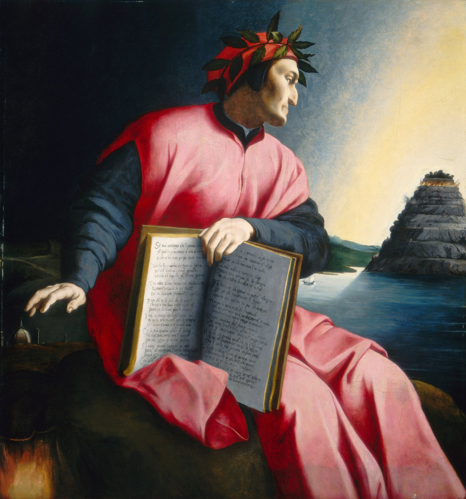
단테의 알레고리적 초상 · 아뇰로 브론치노, 1530년경 · 펼친 신곡과 함께 그린 매너리즘 회화 [Wikimedia · Public Domain]
Tabula I · 단테의 피렌체 1265-1301
시인의 도시 — 겔프와 기벨린, 흑당과 백당의 무대
토스카나 이탈리아 반도 몬타페르티 전투(1260)
단테가 청년기를 보낸 무대. 피렌체·시에나·피스토이아·아레초가 좁은 토스카나 안에서 끊임없이 싸웠고, 남쪽 교황령과 북쪽 황제파 코무네의 자장이 도시의 운명을 흔들었다.
III
1290 · 1294 · 피렌체
베아트리체의 죽음, 새로운 인생
강의 듣기
베아트리체가 스물넷에 세상을 떠났다. 그 죽음이 한 청년을 폐허로 무너뜨렸고, 동시에 한 위대한 약속을 낳았다.
1290년 6월 8일, 베아트리체가 죽었다. 향년 스물넷. 사인은 기록되지 않았으나 짧은 병이었던 듯하다. 단테는 무너졌다. 『새로운 인생』의 후반부는 온통 이 상실의 통곡으로 채워진다. 그는 눈물로 시력을 잃을 지경에 이르렀고, 한동안 철학의 위안에 몸을 기댔다. 보에티우스의 『철학의 위안』과 키케로의 『우정론』을 읽으며 슬픔을 다스리려 했고, 그 독서가 도리어 그를 깊은 학문의 길로 이끌었다. 슬픔이 학자를 만든 셈이다.
슬픔의 밑바닥에서 그는 한 권의 책을 완성했다. 1293년에서 1294년경에 쓴 『새로운 인생』, 이탈리아어로 비타 누오바였다. 이 책은 단테가 베아트리체에게 바친 시 서른한 편을 모으고, 각 시 앞뒤에 그 시가 어떻게·왜 지어졌는지를 설명하는 산문 해설을 끼워 넣은 독특한 형식이었다. 운문과 산문을 엮은 이 양식을 프로시메트룸이라 하는데, 단테는 여기에 자전적 고백의 색을 입혀 거의 최초의 근대적 자기 서사를 만들어 냈다. 한 영혼의 내면을 시간 순으로 추적하는 이 형식은 훗날 유럽 자전 문학의 먼 조상이 되었다.
책의 마지막 장에서 단테는 운명을 가르는 한 문장을 남긴다. 그는 베아트리체에 대한 어떤 놀라운 환상을 보았다고 적은 뒤, 만약 신께서 자신을 더 살게 해 주신다면 "어떤 여인에 대해서도 일찍이 쓰인 적 없는 것"을 그녀에 관해 쓰겠노라 맹세한다. 이 맹세가 곧 『신곡』이었다. 한 청년의 슬픔이 인류 문학사 최대의 약속으로 응결된 순간이다. 베아트리체는 죽음으로 단테에게서 사라졌으나, 바로 그 죽음을 통해 그녀는 영원한 시의 안내자로 다시 태어날 자격을 얻었다.
이 약속이 실제 작품으로 결실을 맺기까지는 다시 십수 년이 걸렸다. 그사이 단테는 정치에 뛰어들었다 추방당했고, 철학과 신학을 더 깊이 파고들었으며, 이탈리아 전역을 떠돌았다. 즉 『신곡』은 한 청년의 사랑 고백에서 출발해, 한 중년 망명자의 전 생애와 학식과 고난을 모두 빨아들인 뒤에야 비로소 완성될 수 있었다. 베아트리체에게 바친 작은 맹세 한 줄이, 결국 한 인간의 모든 것을 담는 거대한 그릇으로 자라난 것이다. 사랑에서 시작해 우주에 이른 이 여정이야말로 단테의 생애 그 자체였다.
죽음 자체가 베아트리체를 더 높은 자리로 끌어올렸다. 살아 있는 동안 그녀는 단테가 멀리서 바라보는 한 여인이었으나, 죽음과 함께 그녀는 지상을 떠나 천국에 속한 존재가 되었다. 단테에게 이것은 상실인 동시에 변용이었다. 그녀는 이제 썩어 없어질 육신이 아니라 영원한 빛 속의 영혼이었고, 따라서 신을 향한 길의 안내자가 될 자격을 얻었다. 『신곡』에서 베아트리체가 천국의 안내자로 등장할 수 있었던 것은, 바로 이 이른 죽음 때문이었다. 단테는 자신이 가장 사랑한 이의 죽음을 가장 높은 시적 의미로 바꾸어 냈다.
베아트리체의 죽음 이후 단테는 철학에 깊이 빠져들었다. 그는 산타 크로체의 프란체스코회 학교와 산타 마리아 노벨라의 도미니코회 학교에서 강의를 들으며, 토마스 아퀴나스의 신학과 아리스토텔레스의 철학을 흡수했다. 동시에 그는 귀도 카발칸티, 라포 잔니, 치노 다 피스토이아 같은 벗들과 함께 새로운 시 운동을 이끌었다. 그 이름이 돌체 스틸 노보, 곧 "달콤한 새로운 문체"였다. 사랑을 통속적 정념이 아니라 영혼을 고양하는 영적 체험으로 노래하는 이 흐름의 정점에 단테가 있었다. 그는 연옥편에서 한 시인의 입을 빌려 자신이야말로 사랑이 불러 주는 대로 받아 적는 시인이라 선언한다.
돌체 스틸 노보가 무엇이었는지는 단테 자신이 가장 잘 설명했다. 그는 연옥편에서 선배 시인 보나준타 다 루카의 입을 빌려, 단테의 새로운 시가 옛 시인들과 무엇이 다른지를 묻게 한다. 단테는 답한다. "나는 사랑이 내 안에서 숨을 불어넣을 때, 그것을 받아 적는 사람일 뿐이다." 기교나 수사가 아니라 진실한 내면의 사랑에서 시가 흘러나와야 한다는 이 시론은, 당대의 인공적이고 현학적인 시 문화에 대한 조용한 혁명이었다. 시가 머리의 장식이 아니라 마음의 진실이어야 한다는 것이다.
『새로운 인생』은 단순한 연애 시집이 아니라 한 영혼의 전기였다. 단테는 자신이 베아트리체를 처음 본 순간부터 그녀의 죽음, 그리고 그 이후의 방황과 회복까지를 시간 순으로 따라간다. 사랑이 어떻게 한 인간을 변화시키는가, 상실이 어떻게 더 높은 사랑으로 승화되는가를 추적하는 이 구조는 훗날 『신곡』의 거대한 영적 여정을 미리 축소해 보여 준 셈이다. 작은 책 한 권이 장차 쓰일 대작의 씨앗을 품고 있었다. 그래서 학자들은 『새로운 인생』을 "신곡의 서곡"이라 부르기도 한다.
나는 어떤 여인에 대해서도 일찍이 쓰인 적 없는 것을 그녀에 관해 쓰기를 희망한다.
단테, 『새로운 인생』 제42장(마지막 장)
곁가지 1 — 벗이자 라이벌, 귀도 카발칸티
귀도 카발칸티는 단테가 "내 첫 친구"라 부른 시인이자, 돌체 스틸 노보의 또 다른 거장이었다. 그러나 두 사람의 길은 갈렸다. 카발칸티는 백당의 강경파였고, 1300년 단테가 프리오리(행정장관)로서 양당 지도자를 추방할 때, 그 명단에 친구 카발칸티의 이름도 들어 있었다. 카발칸티는 유배지에서 말라리아에 걸려 그해에 죽었다. 단테는 평생 이 일을 마음의 짐으로 안았고, 『신곡』 지옥편에서 카발칸티의 아버지를 등장시켜 아들의 안부를 묻게 하는 가슴 저린 장면으로 그를 기렸다. 우정과 정치가 충돌할 때 단테가 택한 공정함의 대가는 평생의 회한이었다.
[Source] Dante, 『Inferno』 X곡; G. Cavalcanti 시집; T. Barolini, 『Dante's Poets』.
곁가지 2 — 『향연』 속의 또 다른 사랑
훗날 망명기에 쓴 『향연(Convivio)』에서 단테는 베아트리체가 죽은 뒤 "고귀한 여인(donna gentile)"에게 마음이 끌렸다고 고백한다. 학자들은 이 여인이 실존 인물인지, 아니면 철학 그 자체를 의인화한 알레고리인지를 두고 오래 다투어 왔다. 『향연』 안에서 단테 스스로 그녀를 "철학"으로 해석하지만, 『새로운 인생』의 문맥에서는 한때 실제로 마음이 흔들렸던 일을 가리키는 듯도 하다. 한 시인의 내면에서 살아 있는 여인과 추상적 진리가 끊임없이 겹쳐지고 갈라졌다. 결국 단테는 연옥의 정상에서 베아트리체에게 "다른 길로 빠졌던" 자신을 꾸짖게 함으로써, 이 방황을 영적 성장의 한 단계로 갈무리한다.
이 시기 단테가 쓴 시들 가운데는 베아트리체와 무관한 작품들도 있다. 이른바 "거친 시(rime petrose)", 곧 차갑고 잔혹한 여인을 향한 격렬한 정념의 시들이다. 이 작품들은 영적인 돌체 스틸 노보와는 전혀 다른 육체적이고 거친 어조를 띤다. 단테가 단일한 시인이 아니라, 천상의 사랑부터 지상의 격정까지 모든 음역을 다룰 줄 아는 거장이었음을 이 시들이 증언한다. 『신곡』이 지옥의 거친 언어부터 천국의 황홀한 언어까지 자유자재로 구사할 수 있었던 것은, 이 다양한 습작의 시기가 있었기 때문이다.
유럽 대학
같은 시기 파리 대학과 볼로냐 대학이 스콜라 철학의 황금기를 누리고 있었다. 토마스 아퀴나스는 1274년 죽었고, 그의 『신학 대전』이 단테 사상의 뼈대가 된다.
이슬람 세계
맘루크 술탄국이 1291년 십자군 최후의 거점 아크레를 함락시키며 약 200년에 걸친 십자군 시대를 사실상 끝냈다.
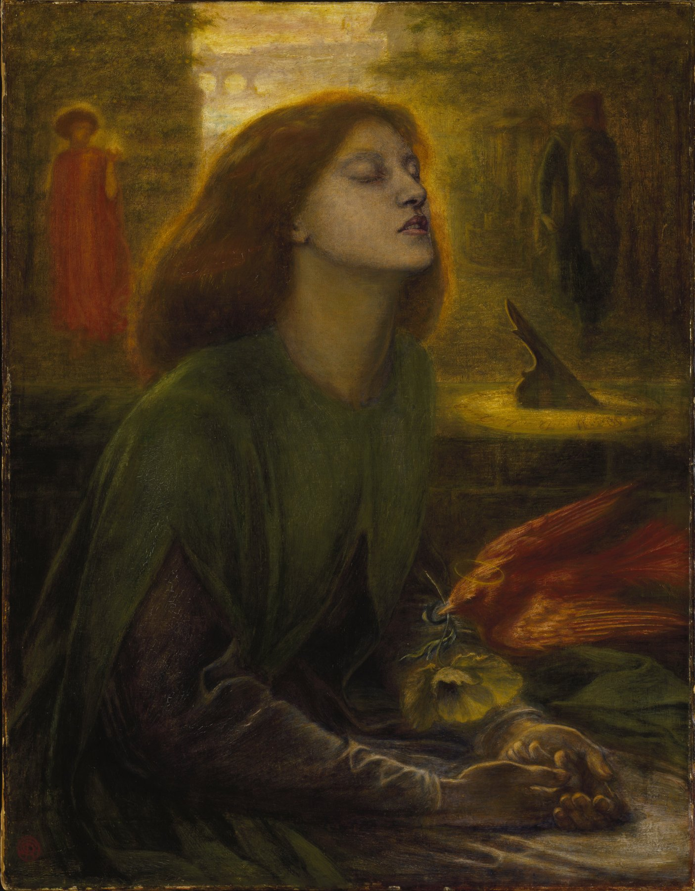
베아타 베아트릭스 · 단테 가브리엘 로세티, 1864-70 · 테이트 갤러리 · 화가는 자기 아내의 죽음을 베아트리체의 임종에 겹쳐 그렸다 [Wikimedia · Public Domain]
IV
1295-1301 · 피렌체
피렌체 정치와 흑백의 분열
강의 듣기
한 시인이 도시의 정치에 발을 들였다. 그 한 걸음이 그를 영원한 망명으로 끌고 갈 줄은 아무도 몰랐다.
서른 무렵, 단테는 피렌체 공직에 나섰다. 1295년, 그는 의술·약제상 길드에 이름을 올렸다. 직접 약을 팔기 위해서가 아니라, 길드에 속해야만 공직에 나갈 수 있었기 때문이다. 이후 1295년부터 1301년까지 그는 여러 평의회의 위원을 거쳐, 마침내 1300년 6월 15일부터 두 달간 피렌체 최고 행정기구인 프리오리(우선위원) 여섯 명 가운데 한 사람이 되었다. 두 달마다 교체되는 이 자리는 짧지만 도시의 정점이었고, 단테는 정확히 그 정점에 섰을 때 비극의 씨앗을 심게 된다. 훗날 그는 "나의 모든 불행은 그 프리오리 직에서 비롯되었다"고 회고했다고 전한다.
당시 피렌체의 정치 지형을 이해하려면 두 겹의 분열을 보아야 한다. 첫째 겹은 황제파(기벨린)와 교황파(겔프)의 오랜 대립이다. 황제파는 신성 로마 황제의 권위를, 교황파는 로마 교황의 권위를 받들었다. 피렌체에서는 1289년 캄팔디노 전투 이후 교황파가 승리해 황제파를 거의 몰아냈다. 그러나 적이 사라지자 승자가 갈라졌다. 이것이 둘째 겹, 곧 교황파 내부의 흑당(네리)과 백당(비안키)의 분열이다.
흑당은 도나티 가문을 중심으로 교황의 강력한 개입을 환영하는 강경파였고, 백당은 체르키 가문을 중심으로 피렌체의 자치를 지키며 교황의 세속적 간섭에 저항하는 온건파였다. 단테는 백당에 속했다. 이 분열을 더욱 위험하게 만든 인물이 교황 보니파시오 8세였다. 야심에 찬 이 교황은 자신을 영적 수장을 넘어 이탈리아의 세속 군주로 자처했고, 토스카나를 교황의 직접 영향권에 두려 했다. 두 권력, 곧 교회의 검과 세속의 검이 한 손에 쥐어져야 한다는 그의 주장은 단테가 평생 맞서 싸운 사상이었다.
1300년 프리오리가 된 단테는 도시의 평화를 지키기 위해 양당의 주모자들을 함께 추방하는 균형책을 폈다. 그 명단에는 백당 측 친구 귀도 카발칸티까지 포함되었다. 누구도 만족시키지 못한 이 결정은 단테의 공정함을 보여 주지만, 동시에 그를 양쪽 모두의 적으로 만들었다. 1301년, 보니파시오 8세는 평화 중재를 명분으로 프랑스 왕의 동생 샤를 드 발루아를 피렌체로 불러들였다. 백당은 그를 막을지 받아들일지를 두고 사절단을 로마로 보냈고, 그 사절단 가운데 단테가 있었다. 도시를 비운 그 사이, 운명의 칼날이 그의 뒤에서 떨어진다.
단테의 정치사상을 이해하려면 그가 평생 매달린 한 가지 이상을 보아야 한다. 그것은 교회와 국가, 곧 교황권과 황제권의 분리였다. 단테는 두 권력이 각자의 영역에서 독립적으로 인류를 인도해야 한다고 보았다. 교황은 영혼을 천국으로, 황제는 육신을 지상의 평화로 이끄는 두 개의 태양이어야 했다. 그러나 보니파시오 8세 같은 교황은 이 둘을 한 손에 쥐려 했다. 단테가 보기에 교회가 세속 권력에 손을 뻗는 순간 부패가 시작되었고, 이탈리아의 모든 불행이 거기서 비롯되었다. 이 신념은 훗날 『제정론』에서 체계적으로 펼쳐진다.
프리오리로서 단테가 내린 결정들은 그의 양심과 현실 정치 사이의 긴장을 보여 준다. 그는 도시의 평화를 위해 양당의 과격파를 함께 추방했지만, 이는 그를 어느 편에서도 환영받지 못하는 처지로 몰아넣었다. 정의를 추구한 대가가 양쪽의 적이 되는 것이었다. 또한 그는 교황의 군대가 토스카나를 지나가는 것을 허락할지를 두고 평의회에서 홀로 반대 발언을 했다고 전한다. 한 시인의 정치적 강직함이 결국 그를 파멸로 이끌었으나, 바로 그 강직함이 『신곡』의 도덕적 권위를 떠받치는 토대가 되었다. 자기 손해를 무릅쓰고 옳은 길을 택한 자만이 지옥의 죄인들을 심판할 자격을 얻는다.
아, 노예 같은 이탈리아여, 고통의 여인숙이여, 거대한 폭풍 속의 키 없는 배여, 지방의 여주인이 아니라 창녀의 소굴이로다!
단테, 『신곡』 연옥편 제6곡 76-78행
피렌체 정치의 두 겹 분열
1차 분열황제파(기벨린) vs 교황파(겔프)
1289캄팔디노 전투 — 교황파 승리(단테 참전설)
2차 분열교황파 내 흑당(네리) vs 백당(비안키)
단테의 진영백당 — 자치·반(反)교황 개입
최고직1300.6.15~8.15 프리오리 재임
곁가지 1 — 캄팔디노의 기병 단테
레오나르도 브루니 등 후대 전기에 따르면, 단테는 1289년 캄팔디노 전투에 교황파 기병으로 직접 참전했다고 한다. 스물네 살의 시인이 갑옷을 입고 아레초의 황제파와 맞섰다는 것이다. 전투는 교황파의 대승으로 끝났다. 이 종군 경험은 『신곡』 곳곳의 생생한 전쟁 묘사, 특히 군대의 행군과 무기의 광경, 부상병의 신음에 짙은 그림자를 드리웠다는 해석이 있다. 다만 단테 본인은 이 참전을 직접 기록으로 남기지 않아, 세부는 후대 증언에 기댄다.
[Source] Leonardo Bruni, 『Vita di Dante』(1436); Dino Compagni, 『Cronica』.
곁가지 2 — 보니파시오 8세를 향한 단테의 증오
단테가 교황 보니파시오 8세를 얼마나 미워했는지는 『신곡』이 증언한다. 그는 이 교황을 지옥의 성직 매매자 구덩이에 거꾸로 처박힌 모습으로 예고한다. 흥미롭게도 단테가 지옥을 여행하는 가상의 시점은 1300년 봄으로, 보니파시오가 아직 살아 있던 때다. 그래서 시 속에서 단테는 "아직 오지 않은" 교황의 자리를 미리 비워 둔 채, 먼저 떨어진 다른 교황의 입을 빌려 보니파시오의 추락을 예언하게 만든다. 산 자를 지옥에 미리 배정한, 문학사에 드문 복수극이다. 실제로 보니파시오 8세는 1303년 "아나니의 따귀" 사건으로 굴욕 속에 죽는다.
[Source] Dante, 『Inferno』 XIX곡; G. Holmes, 『Dante』.
이 모든 분열의 밑바닥에는 중세 유럽 전체를 관통한 거대한 물음이 깔려 있었다. 교회와 국가, 영적 권위와 세속 권위 가운데 무엇이 위인가. 11세기 서임권 투쟁 이래 교황과 황제는 이 문제로 거듭 충돌했고, 작은 도시 피렌체의 흑백 분열 또한 그 거대한 갈등의 축소판이었다. 단테는 이 물음을 자기 시대의 가장 절박한 문제로 받아들였고, 정치인으로서 그 한복판에 섰다가 무너졌다. 그러나 그 좌절이 그를 한낱 당파인을 넘어 보편적 정치 사상가로 키웠다. 한 도시의 패배자가 인류의 정치 철학에 한 장을 보탠 것이다.
프랑스
필리프 4세(미남왕)가 왕권을 강화하며 교황과 정면충돌하고 있었다. 그 동생 샤를 드 발루아가 곧 피렌체의 운명을 바꾼다. 1303년에는 필리프 4세의 부하가 보니파시오 8세를 아나니에서 모욕·구금하는 "아나니의 따귀" 사건이 터진다.
잉글랜드·스코틀랜드
같은 무렵 윌리엄 월리스가 스코틀랜드 독립 전쟁을 이끌었고, 에드워드 1세가 이를 진압하려 했다. 1297년 스털링 브리지 전투가 벌어졌다.
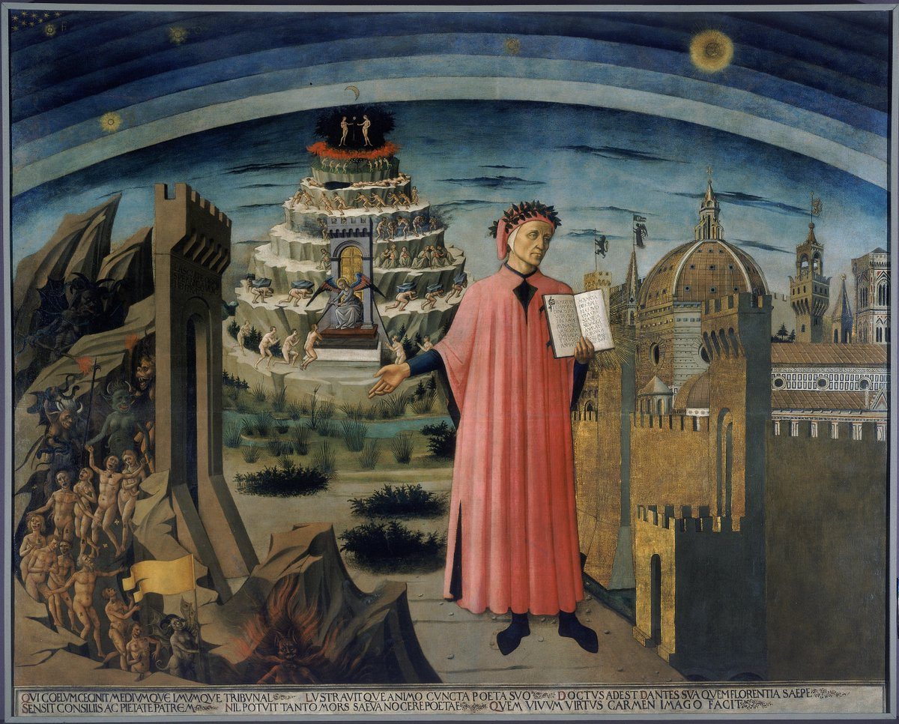
단테와 신곡의 도시 · 도메니코 디 미켈리노, 1465 · 피렌체 대성당 · 왼손에 펼친 신곡, 오른쪽엔 그를 추방한 바로 그 피렌체가 그려져 있다 [Wikimedia · Public Domain]
V
1302-1318 · 이탈리아 유랑
영원한 망명의 시작
강의 듣기
한 시인이 고향에 영영 돌아갈 수 없게 되었다. 그 평생의 슬픔이 인류 최대의 시를 떠받치는 주춧돌이 되었다.
단테가 로마에서 교황과 협상하는 동안, 1301년 11월 샤를 드 발루아가 피렌체에 입성했다. 그는 평화 중재자를 자처했으나 사실상 흑당의 쿠데타를 비호했다. 흑당이 권력을 잡자 백당에 대한 피의 보복이 시작되었다. 1302년 1월 27일, 부재중인 단테에게 첫 판결이 떨어졌다. 죄목은 공금 횡령·부정·교황 반대였으나, 그 실체는 정치적 보복이었다. 막대한 벌금과 2년 추방, 그리고 공직 영구 박탈. 단테가 출두를 거부하자 같은 해 3월 10일, 두 번째이자 결정적인 판결이 내려졌다. 피렌체 영내에서 붙잡히면 화형에 처한다는 궐석 사형 선고였다. 단테는 이 순간부터 죽을 때까지, 단 하루도 합법적으로 고향 땅을 밟을 수 없었다.
너는 가장 사랑하는 모든 것을 두고 떠나리라. 이것이 추방의 활이 가장 먼저 쏘는 화살이니라. 너는 남의 빵이 얼마나 짠지를, 남의 집 계단을 오르내리는 길이 얼마나 가파른지를 맛보게 되리라.
단테, 『신곡』 천국편 제17곡 55-60행(조상 카치아구이다의 예언)
처음 몇 해 동안 단테는 다른 망명 백당, 심지어 한때의 적이던 황제파 잔당과도 손잡고 무력으로 고향을 되찾으려 했다. 그러나 거듭된 음모와 원정 계획은 번번이 실패했고, 동지들의 어리석음과 분열에 단테는 깊이 절망했다. 마침내 그는 모든 당파와 결별하고 "스스로 하나의 당이 되리라" 결심한다. 카치아구이다의 입을 빌려 그는 이 고독한 자립을 천국편에서 자랑스럽게 선언한다. 어떤 집단의 도구가 되기를 거부하고 홀로 진리의 편에 서겠다는 이 결심은, 정치적으로는 패배였으나 한 시인으로서는 가장 위대한 독립 선언이었다.
이후 그의 삶은 끝없는 유랑이었다. 베로나, 볼로냐, 파도바, 루니자나의 말라스피나 가문 영지, 카센티노의 산성들, 그리고 다시 베로나. 그는 어느 한 곳에도 오래 머물지 못하고 영주의 환대에 의지해 옮겨 다녔다. 그가 받은 보호는 그가 이미 명성 높은 시인이었기 때문이다. 가장 후한 후원자는 베로나의 군주 칸그란데 델라 스칼라였다. 단테는 그의 궁정에서 여러 해를 머물렀고, 훗날 『신곡』의 마지막 부분인 천국편을 칸그란데에게 헌정한다.
유랑의 거점들은 저마다 단테의 작품에 흔적을 남겼다. 베로나에서 그는 스칼라 가문의 화려한 궁정 문화를 보았고, 볼로냐에서는 유럽 최고(最古)의 대학이 뿜어내는 법학과 학문의 열기를 호흡했다. 산악 지대 카센티노의 수도원에서는 깊은 고요와 자연의 위엄을 만났고, 라벤나에서는 비잔틴 제국의 황금빛 유산을 마주했다. 한 곳에 정착했다면 결코 모았을 수 없는 이 풍경들이 모두 그의 시 속으로 스며들었다. 단테의 지옥과 연옥과 천국에는 그가 떠돌며 본 이탈리아의 산과 강, 도시와 사람들이 가득하다.
망명자의 자존심은 때로 그를 외롭게 만들었다. 보카치오가 전하는 일화에 따르면, 단테는 궁정에서 광대들이 받는 환대를 자신이 받는 대접과 비교하며 씁쓸해했다고 한다. 칸그란데가 어째서 천박한 어릿광대가 시인보다 더 사랑받느냐고 묻자, 단테는 "사람은 자기와 닮은 자를 사랑하는 법"이라 답했다고 전한다. 진위는 확실치 않으나, 이 일화는 재능 있는 망명객이 후원자의 식탁에서 느꼈을 미묘한 굴욕과 자존의 긴장을 잘 보여 준다. 그는 빵을 얻어먹으면서도 결코 자신을 낮추지 않았다.
망명의 시기는 또한 단테의 사상이 가장 깊어진 때였다. 한 도시의 당파 정치에 매여 있던 그는 추방을 통해 비로소 더 큰 질문 앞에 섰다. 정의란 무엇인가, 권력은 어디서 정당성을 얻는가, 인간은 어떻게 행복에 이르는가. 이 질문들에 답하기 위해 그는 고전 철학과 그리스도교 신학을 한데 엮었다. 한 개인의 불행이 보편적 사유로 승화되는 과정이 거기 있었다. 단테가 만약 피렌체에 남아 안락하게 늙었다면, 그는 아마 유능한 정치가로 기억되었을 뿐 인류의 스승이 되지는 못했을 것이다.
유랑 중에도 단테는 끊임없이 썼다. 망명이라는 외적 불운이 오히려 그의 내적 생산성을 폭발시켰다. 『향연』, 『속어론』, 『제정론』, 수많은 서한, 그리고 무엇보다 『신곡』. 이 모든 것이 안정된 집도, 고정된 수입도, 자기 서재도 없는 떠돌이의 손에서 나왔다. 그가 어떻게 방대한 고전을 인용하고 정확한 신학을 펼칠 수 있었는지는 지금도 경이로운 수수께끼다. 아마도 그는 머릿속에 한 권의 거대한 도서관을 지니고 다녔을 것이다. 추방은 그의 몸을 떠돌게 했으나, 그의 정신은 그 어느 때보다 단단히 한자리에 뿌리내리고 있었다.
망명의 무게는 시 곳곳에 새겨졌다. 천국편의 저 유명한 "남의 빵은 짜다"는 구절은 평생 남의 식탁에서 얻어먹어야 했던 한 인간의 정직한 고백이다. 그러나 역설적으로, 바로 그 떠도는 삶이 『신곡』을 가능케 했다. 한 도시 안에 안주했다면 그는 이탈리아 전체를, 나아가 인간 영혼의 전 우주를 무대로 삼는 시를 쓰지 못했을 것이다. 추방은 그에게서 고향을 빼앗았으나, 대신 온 세계를 주었다. 떠도는 자의 눈만이 볼 수 있는 폭넓은 시야가 그의 시에 깃들었다.
가장 아픈 대목은 가족이다. 아내 젬마와 자녀들은 피렌체에 남았고, 단테는 아내를 다시 보지 못했다. 다만 아들 피에트로와 야코포, 딸 안토니아(수녀가 되어 베아트리체라는 수도명을 받았다)는 훗날 망명지의 아버지 곁으로 와 임종을 지켰다. 단테는 자기 작품에서 가족을 거의 언급하지 않는 절제로 일관했다. 사적 고통을 시로 쏟아 내는 대신, 그것을 인류 전체의 보편적 순례로 승화시키는 길을 택한 것이다.
망명이 단테에게 남긴 것은 고통만이 아니었다. 그는 이탈리아 각지를 떠돌며 다양한 방언과 풍속, 정치 형태를 직접 보았다. 베로나의 궁정 문화, 볼로냐의 대학 학풍, 루니자나의 산악 영주 사회, 라벤나의 비잔틴 유산. 한 도시에만 머물렀다면 결코 얻지 못했을 이 폭넓은 견문이 『신곡』의 살과 피가 되었다. 그가 지옥과 연옥과 천국에서 만나는 수많은 인물들, 그들의 사투리와 출신지에 대한 정확한 묘사는 모두 떠돌이 시인의 눈이 모은 것이다. 추방은 그를 한 도시의 시인에서 이탈리아 전체의 시인으로, 나아가 인류의 시인으로 키웠다.
이 시기에 단테는 정치 논저 『제정론(De Monarchia)』을 라틴어로 집필했다. 그는 세 가지를 논증한다. 첫째, 인류의 평화를 위해서는 단일한 보편 군주(황제)가 필요하다. 둘째, 로마 제국의 권위는 신의 섭리에 의해 정당하게 주어졌다. 셋째, 황제의 권위는 교황을 거치지 않고 신에게서 직접 온다. 마지막 주장은 교황권의 절대 우위를 부정하는 것이어서, 이 책은 훗날 금서 목록에 오르고 한때 공개적으로 불태워지기까지 했다. 시인이자 정치 사상가로서 단테는 자기 시대의 가장 뜨거운 논쟁의 한복판에 섰다.
곁가지 1 — 거절당한 사면
1315년경, 피렌체는 망명자들에게 사면을 제안했다. 그러나 조건이 모욕적이었다. 벌금을 내고, 참회복을 입은 채 머리에 촛불을 들고 세례당 앞에서 공개적으로 죄를 인정하라는 것이었다. 단테는 한 친구에게 보낸 편지에서 이를 단호히 거절했다. "이것이 영광스럽게 고향으로 돌아가는 길이란 말인가? 어디서든 진리와 별을 바라볼 수 있다면, 빵이 부족하지 않을진대, 나는 결코 그런 굴욕의 길로는 피렌체에 들어가지 않으리라." 자존심이 안락한 귀향보다 컸다. 그는 결백을 인정받는 명예로운 귀환이 아니면 차라리 망명을 택했다.
1310년, 신성 로마 황제 하인리히 7세가 이탈리아의 질서를 회복하겠다며 알프스를 넘어왔다. 단테는 환호했다. 그는 황제에게 보내는 공개 서한에서 그를 "새로운 모세", 이탈리아를 구할 구세주로 떠받들었고, 피렌체에는 황제에게 저항하지 말라 준엄히 경고하는 편지를 보냈다. 그러나 하인리히 7세는 1313년 원정 도중 열병으로 갑자기 죽었다. 단테의 정치적 희망은 함께 무너졌다. 황제를 향한 이 기대는 그의 정치 논저 『제정론(De Monarchia)』의 사상적 배경이 된다. 보편 군주정이 평화를 가져온다는 그의 이상은 끝내 현실에서 좌절되었다.
하인리히 7세의 이탈리아 원정(1310-1313)이 단테의 정치적 희망의 정점이자 종말이었다. 황제권은 이미 약화 일로였고, 이탈리아 도시들은 제국의 통제를 벗어나고 있었다.
프랑스·교황청
1309년 교황청이 로마를 떠나 프랑스 아비뇽으로 옮겨 갔다(아비뇽 유수, 1309-1377). 단테는 이 "교회의 바빌론 유수"를 통렬히 비판했다.
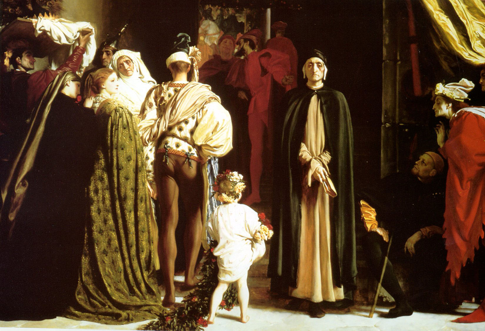
망명 중의 단테 · 프레더릭 레이턴, 1864년경 · 궁정 한구석에서 냉대받는 망명 시인의 고독을 그린 빅토리아 시대 회화 [Wikimedia · Public Domain]
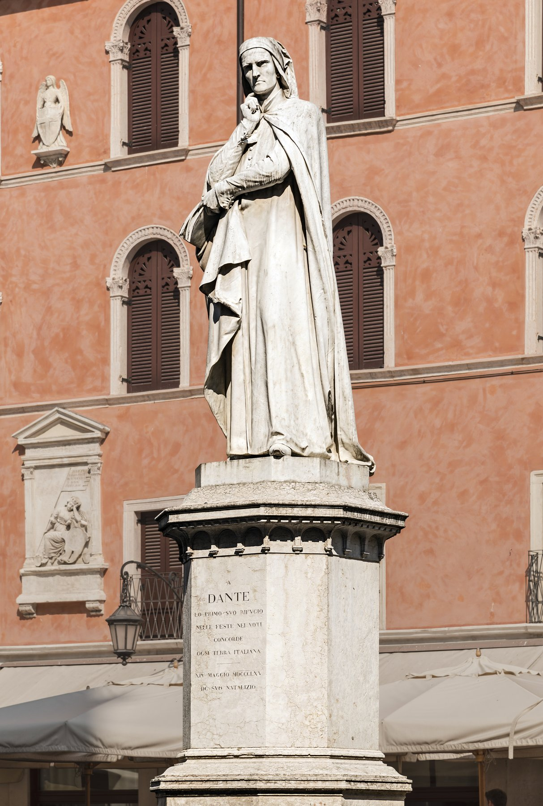
베로나의 단테 기념상 · 우고 차놀리니, 1865 · 자신을 거두어 준 베로나가 망명 시인을 기린 동상 [Wikimedia · Public Domain]
Tabula II · 망명의 유랑 1302-1321
남의 빵, 남의 계단 — 베로나에서 라벤나까지
육로 유랑 이탈리아 반도- - 마지막 베네치아 사절(해로)
단테는 토스카나에서 쫓겨나 이탈리아 북부를 떠돌았다. 베로나의 칸그란데, 라벤나의 귀도 노벨로가 그를 거두었다. 출발점 피렌체로는 끝내 돌아가지 못했다.
VI
1304-1308 · 망명 중
라틴어를 떠나 토스카나 속어로
강의 듣기
한 시인이 생애 가장 대담한 결정을 내렸다. 가장 위대한 작품을 학자의 라틴어가 아니라 민중의 속어로 쓰리라.
망명 초기에 단테는 미완으로 끝난 두 권의 학문서를 썼다. 하나는 『향연(Convivio)』, 토스카나 속어로 쓴 철학적 산문이다. 그는 라틴어를 모르는 평신도, 특히 귀족과 부인들에게 지혜의 "잔치"를 베풀고자 일부러 속어를 택했다. 다른 하나는 『속어론(De Vulgari Eloquentia)』, 역설적이게도 라틴어로 쓴 언어 이론서다. 학식 있는 독자를 향한 학술서였기에 라틴어를 썼지만, 그 내용은 정반대로 속어의 위엄을 옹호하는 선언이었다. 두 책 모두 미완으로 끝났으나, 그 안에 담긴 사유는 『신곡』이라는 거대한 실천으로 결실을 맺는다.
『속어론』에서 단테는 놀라운 주장을 편다. 라틴어는 문법으로 인위적으로 고정된 "죽은" 언어이고, 어머니에게서 자연스럽게 배우는 속어야말로 더 고귀하고 살아 있는 언어라는 것이다. 그는 이탈리아 반도의 열네 개 주요 방언을 검토한 끝에, 어느 한 도시의 사투리도 그대로는 완벽하지 않다고 보고, 각 지역의 가장 빼어난 표현을 가려 뽑은 이상적 문학어, 곧 "고귀한 속어(volgare illustre)"를 제안한다. 이것이 통일 이탈리아 문학어에 대한 최초의 이론적 구상이었다. 단테는 이 이상적 언어를 향기를 사방에 남기되 어느 한 굴에도 갇히지 않는 표범에 비유했다.
이 모든 사유는 결국 한 가지 실천으로 귀결되었다. 단테는 자신의 필생의 대작 『신곡』을 라틴어가 아니라 토스카나 속어로 썼다. 당시 진지한 문학과 학문은 라틴어로 쓰는 것이 철칙이었다. 영원불멸을 노리는 작품이라면 더더욱 그러했다. 그러나 단테는 정반대를 택했다. 보통 사람도 읽을 수 있는 말로 가장 높은 진리를 노래하기로 한 것이다. 이는 단순한 문체의 선택이 아니라, 누가 진리에 접근할 권리를 갖는가에 대한 혁명적 답변이었다.
실제로 이 선택의 효과는 즉각적이었다. 『신곡』은 출간되자마자 학자뿐 아니라 상인, 장인, 심지어 글을 겨우 읽는 평민에게까지 퍼졌다. 14세기 피렌체의 직공들이 일하며 단테의 시구를 외워 읊었다는 기록이 전한다. 라틴어로 쓰였다면 결코 닿지 못했을 사람들에게 단테의 시는 살아 있는 말로 다가갔다. 후대의 한 일화는 길에서 한 대장장이가 단테의 시를 제멋대로 바꿔 부르자, 단테가 화를 내며 그의 연장을 길에 내던졌다고 전한다. 진위야 어떻든, 그만큼 단테의 시가 거리에서 보통 사람의 입에 오르내렸다는 증거다.
그 결과는 한 언어의 운명을 바꾸었다. 단테의 『신곡』, 그리고 뒤를 이은 페트라르카와 보카치오의 작품이 모두 토스카나 속어로 쓰이면서, 피렌체 방언은 사실상 표준 이탈리아어의 토대가 되었다. 오늘날 이탈리아인이 700년 전의 단테를 거의 그대로 읽을 수 있는 것은 이 선택 덕분이다. 그래서 단테는 "이탈리아어의 아버지"로 불린다. 한 나라의 국어가 한 시인의 작품에서 비롯되었다는 점에서, 단테의 사례는 세계 문학사에서 거의 유례를 찾기 어렵다.
이탈리아 통일 운동기인 19세기에 이르러 이 유산은 정치적 의미까지 얻었다. 수백 년간 작은 나라와 도시로 갈라져 있던 이탈리아 반도가 하나의 국민 국가를 꿈꿀 때, 사람들은 자신들을 하나로 묶어 줄 공통의 정체성을 단테의 언어에서 찾았다. "단테의 언어"는 곧 이탈리아 민족의 언어였고, 단테는 통일 이탈리아의 정신적 아버지로 추앙되었다. 정치적 통일이 이루어지기 600년 전에, 한 망명 시인이 이미 언어로써 이탈리아를 하나로 묶어 두었던 셈이다. 오늘날 이탈리아어를 "단테의 언어(lingua di Dante)"라 부르는 관용 표현이 그 사실을 증언한다.
『향연』은 그 자체로 야심찬 기획이었다. 단테는 모두 열네 편의 칸초네(노래)에 각각 산문 해설을 붙여, 철학과 윤리학의 향연을 펼치려 했다. 비록 네 편으로 미완에 그쳤지만, 이 책에서 그는 지식이 소수 학자의 독점물이 되어서는 안 된다고 역설한다. 천성적으로 앎을 갈망하는 모든 사람이 지혜의 식탁에 앉을 권리가 있으며, 그래서 라틴어를 모르는 이들을 위해 속어로 그 식탁을 차린다는 것이다. 이는 중세 지식 사회의 위계에 대한 정면 도전이었다. 단테는 지식의 민주화를 700년 전에 이미 꿈꾸었다.
단테의 속어 선택이 더욱 놀라운 것은, 그가 라틴어에 결코 무능하지 않았다는 사실 때문이다. 그는 라틴어로 정교한 논문과 서한을 자유자재로 썼다. 즉 그의 속어 선택은 능력의 한계가 아니라 의식적인 신념의 결과였다. 가장 높은 진리를 가장 많은 사람에게 전하려면 살아 있는 일상의 언어여야 한다는 확신. 이 확신이 없었다면 『신곡』은 소수 성직자의 서가에 꽂힌 또 하나의 라틴어 시로 남았을 것이고, 이탈리아어라는 언어도, 어쩌면 이탈리아라는 문화적 정체성도 지금과는 사뭇 달랐을 것이다.
속어가 더 고귀하다. 첫째로 그것이 인류가 처음 사용한 말이기 때문이요, 둘째로 온 세상이 그것을 사용하기 때문이며, 셋째로 그것이 우리에게 자연스럽기 때문이다.
단테, 『속어론』 제1권 1장
단테의 언어 혁명
향연속어 산문(미완, 4편)
속어론라틴어 언어 이론(미완, 2권)
신곡전편 토스카나 속어로 집필
결과피렌체 방언 → 표준 이탈리아어
호칭il Sommo Poeta(지고의 시인) · 이탈리아어의 아버지
곁가지 1 — "코메디아"라는 제목의 비밀
단테는 자기 작품을 그냥 "코메디아(Commedia)"라 불렀다. "신성한(Divina)"이라는 말은 200여 년 뒤 보카치오가 헌사로 덧붙인 것이고, 1555년 베네치아 판본부터 제목에 정식으로 들어갔다. 그렇다면 왜 희극(코메디아)인가? 단테는 칸그란데에게 보낸 서한에서 설명한다. 비극은 고귀하게 시작해 비참하게 끝나지만, 희극은 거칠게 시작해 행복하게 끝난다는 것이다. 지옥에서 시작해 천국에서 끝나니 이는 희극이요, 또한 학자의 라틴어가 아닌 민중의 속어로 썼으니 "낮은" 문체의 희극이라는 뜻이었다. 우리가 아는 『신곡(神曲)』이라는 한자 제목은 일본을 거쳐 들어온 근대의 번역어다.
[Source] Dante(전칭), 『Epistola XIII ad Cangrande』; Boccaccio, 『Esposizioni sopra la Comedia』.
곁가지 2 — 같은 시대, 같은 결단: 세종과 단테
흥미로운 대조가 있다. 단테가 속어로 글쓰기를 옹호하고 약 한 세기 반 뒤인 1443년, 동쪽 끝 조선에서는 세종대왕이 훈민정음을 창제했다. 두 사람의 방법은 전혀 달랐다. 세종은 아예 새 문자를 만들었고, 단테는 이미 있던 구어 방언을 문학어로 격상시켰다. 그러나 동기는 놀랍도록 닮았다. 어려운 외래 문자 언어(한자·라틴어)에 가로막힌 보통 사람도 읽고 쓸 수 있게 하려는 것. 동서의 두 거인이 같은 인본주의적 충동을 품었던 셈이다. 지식을 소수의 독점에서 풀어 만인에게 돌려주려는 의지가 동서 문명에서 나란히 솟아올랐다.
단테의 언어가 후대에 끼친 영향은 문학에 그치지 않았다. 그가 다듬은 토스카나 속어는 르네상스 인문주의자들의 손을 거쳐 점차 규범화되었고, 16세기 학자 피에트로 벰보는 단테·페트라르카·보카치오의 언어를 표준 이탈리아어의 모범으로 정립했다. 즉 오늘날 이탈리아의 학생이 배우는 문법과 어휘의 먼 뿌리에 단테의 선택이 놓여 있는 것이다. 한 시인의 미학적 결단이 한 민족의 언어 규범으로 굳어진 드문 사례다. 언어를 만든다는 것은 곧 사고의 틀을 만드는 것이기에, 단테는 이탈리아인이 세계를 보고 느끼는 방식 자체에 흔적을 남겼다.
잉글랜드
약 한 세대 뒤인 1387년경, 제프리 초서가 『캔터베리 이야기』를 영어로 써 영문학의 토대를 놓는다. 단테는 토스카나 속어로 그보다 먼저 같은 길을 열었다.
중국
원나라에서 한문 고전 대신 구어체의 잡극(원곡)이 번성하며 서민 문학이 융성하고 있었다. 동서양에서 동시에 "민중의 언어로 쓰는" 흐름이 일었다.
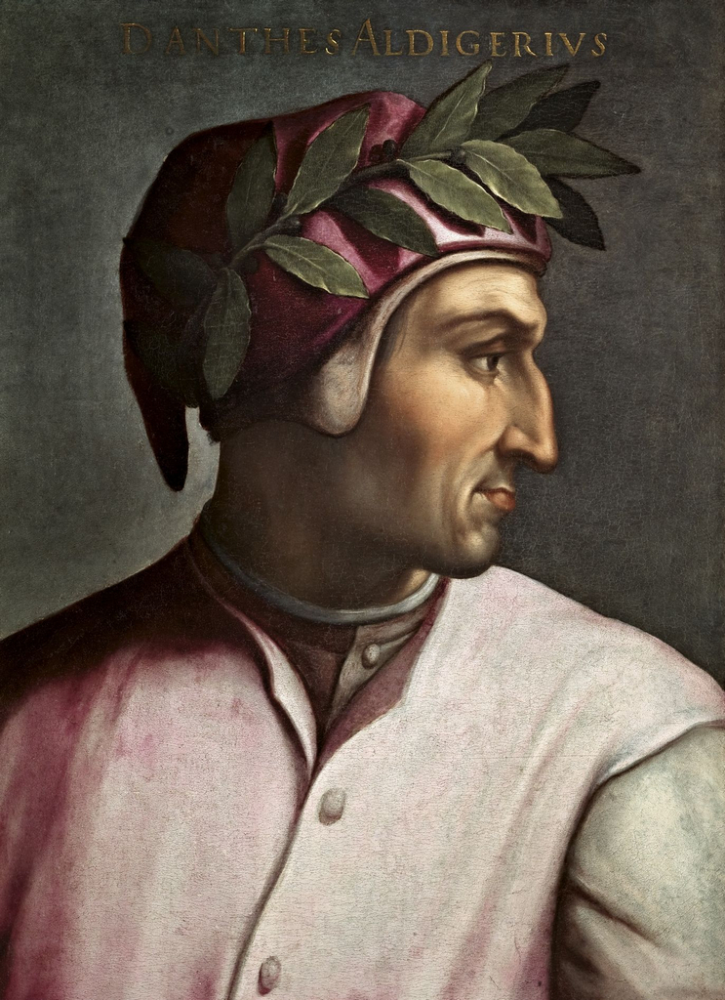
저명인사 초상 연작 속 단테 · 크리스토파노 델 알티시모, 1552-68 · 우피치 · 월계관을 쓴 시인의 표준 도상 [Wikimedia · Public Domain]
VII
1308-1320 · 망명 중
신곡 — 세 세계의 여행
강의 듣기
한 시인이 자신을 주인공 삼아 지옥과 연옥과 천국을 차례로 여행했다. 그 환상의 우주가 700년 동안 인류의 내세 지도가 되었다.
단테는 1308년경부터 『신곡』을 쓰기 시작해 죽기 직전인 1320년경에 완성했다. 작품은 세 부분, 곧 지옥편(인페르노)·연옥편(푸르가토리오)·천국편(파라디소)으로 나뉜다. 각 편은 33곡(칸토)으로 이루어지고, 여기에 지옥편 첫 곡인 서곡 한 편을 더해 전체가 정확히 100곡이다. 운율은 단테가 고안한 삼운구법(테르차 리마), 곧 ABA BCB CDC로 사슬처럼 맞물려 끝없이 이어지는 형식이다. 3과 100이라는 수, 삼위일체와 완전수의 기하학이 작품 전체를 떠받친다. 형식 자체가 곧 신학인 셈이다.
단테가 길을 막는 세 짐승에 부여한 의미도 깊다. 표범은 욕정 또는 기만을, 사자는 오만 또는 폭력을, 암늑대는 탐욕을 상징한다고 흔히 풀이된다. 그 가운데서도 끝없이 굶주리는 암늑대를 단테는 가장 무섭게 그리는데, 많은 학자는 이를 당대 교회와 사회를 좀먹던 탐욕의 알레고리로 읽는다. 한 인간이 곧은 길에서 벗어나 어둠 속을 헤매게 만드는 세 가지 근원적 죄. 단테의 여행은 바로 이 세 짐승을 정면으로 통과해 그 너머로 나아가는 영혼의 모험이다.
이야기는 1300년 성주간(부활절 무렵), 서른다섯의 단테가 어두운 숲에서 길을 잃는 데서 시작된다. 표범·사자·암늑대 세 짐승에게 길이 막힌 그 앞에 고대 로마의 시인 베르길리우스가 나타난다. 단테가 평생 가장 존경한 시인이자 인간 이성의 화신인 베르길리우스가 그를 지옥과 연옥으로 인도한다. 그러나 세례받지 못한 이교도인 그는 천국에 들 수 없기에, 천국의 안내는 베아트리체가 맡는다. 죽음으로 헤어졌던 사랑이 영혼의 길잡이로 되돌아온 것이다. 이성이 갈 수 있는 데까지 안내하고, 그 너머는 은총이 인도한다는 단테 신학의 구조가 두 안내자에 그대로 담겨 있다.
나를 거쳐 길은 비탄의 도시로, 나를 거쳐 길은 영원한 고통으로 (…) 여기 들어오는 너희, 모든 희망을 버려라.
단테, 『신곡』 지옥편 제3곡 1-9행(지옥문의 명문)
지옥은 땅속으로 파인 거대한 깔때기이며, 죄가 무거울수록 아래로 내려간다. 아홉 개의 고리(원)에 림보·욕정·탐식·인색과 낭비·분노·이단·폭력·기만·배신이 차례로 배치된다. 단테는 각 고리에 자신의 정적, 부패한 교황, 신화와 역사 속 인물들을 배치하고, 그 죄에 꼭 맞는 형벌(콘트라파소, 인과응보의 형벌)을 부과한다. 욕정에 빠진 자들은 영원한 폭풍에 휩쓸리고, 점쟁이들은 미래를 엿본 죄로 목이 뒤로 돌아간 채 걷는다. 죄의 본질이 곧 형벌의 모양이 되는 이 정교한 대응이야말로 지옥편의 시적 엔진이다.
지옥의 각 고리는 죄의 무게에 따라 정교하게 배열되어 있다. 단테는 단순한 욕망의 죄보다 의지를 동원한 죄, 그중에서도 신뢰를 저버린 기만과 배신을 가장 무겁게 보았다. 폭력은 짐승의 죄지만, 기만은 오직 인간만이 저지를 수 있는 죄, 곧 신이 준 이성을 악용한 죄이기 때문이다. 그래서 살인자보다 사기꾼이, 사기꾼보다 배신자가 더 깊은 곳에 떨어진다. 이 도덕적 위계는 아리스토텔레스의 윤리학과 그리스도교 신학을 결합한 단테 특유의 사유로, 인간의 죄를 바라보는 그의 깊은 통찰을 보여 준다.
가장 유명한 장면 중 하나가 둘째 고리의 파올로와 프란체스카다. 금지된 사랑에 빠져 함께 살해된 이 연인은 영원히 폭풍 속을 떠돈다. 프란체스카가 들려주는 사랑의 비극에 단테는 너무도 깊이 동요해 그만 정신을 잃고 쓰러진다. 죄인을 단죄하면서도 그 인간적 비극에 함께 우는 이 양면성이야말로 『신곡』을 단순한 도덕 교과서 이상으로 만드는 힘이다. 단테는 심판자이면서 동시에 연민하는 인간이었다.
지옥의 맨 밑바닥, 얼어붙은 코키토스 호수에는 거대한 사탄 루치페로가 박혀 있다. 그의 세 입에는 세 명의 배신자가 영원히 씹히고 있다. 예수를 판 유다, 그리고 카이사르를 배신한 브루투스와 카시우스다. 단테는 종교적 배신과 정치적 배신을 나란히 우주의 가장 깊은 죄로 보았다. 황제권을 신성하게 여긴 그의 정치사상이 신학과 한자리에서 만나는 대목이다. 그에게 로마 제국은 신의 섭리가 세운 보편 질서였고, 그것을 무너뜨린 자는 그리스도를 판 자와 같은 무게의 죄인이었다.
지옥의 가장 잊을 수 없는 인물 가운데 하나는 우골리노 백작이다. 단테는 지옥의 가장 깊은 얼음 속에서, 자신을 배신한 정적 루지에리 대주교의 머리를 영원히 물어뜯는 우골리노를 만난다. 우골리노는 자신과 어린 자식들이 탑에 갇혀 굶어 죽어 간 끔찍한 이야기를 들려준다. 굶주린 자식들이 차라리 자기 살을 먹으라 애원하던 그 지옥 같은 며칠을. 배신자인 우골리노가 동시에 가장 비참한 희생자이기도 하다는 이 이중성은, 인간의 죄와 고통이 얼마나 복잡하게 얽혀 있는가를 드러낸다. 단테는 죄인을 단죄하면서도, 그 죄인 안의 무너진 인간을 끝내 외면하지 않는다.
천국편이 가장 쓰기 어려운 부분이었음을 단테 자신도 토로한다. 고통과 죄는 생생하게 그릴 수 있으나, 순수한 행복과 신의 빛은 인간의 언어로 담아내기가 거의 불가능했기 때문이다. 그래서 천국편은 끊임없이 "말로 표현할 수 없음"을 고백하는 시가 된다. 단테는 본 것을 다 적을 수 없다고, 기억이 욕망을 따라가지 못한다고 거듭 말하면서도, 바로 그 실패의 고백을 통해 역설적으로 가장 높은 시적 경지에 도달한다. 표현 불가능한 것 앞에서 겸허히 무릎 꿇는 그 순간, 시는 침묵의 가장자리에서 가장 눈부시게 빛난다.
연옥은 단테의 독창적 기여가 가장 빛나는 부분이다. 지옥과 천국은 오랜 전통이 있었으나, 연옥이라는 관념은 12세기에 이르러서야 교리로 정착했고, 단테는 그것에 처음으로 또렷한 지형과 시간을 부여했다. 그가 그린 연옥은 절망의 자리가 아니라 희망의 산이다. 그곳의 영혼들은 고통받으면서도 노래하고, 서로를 격려하며, 자신이 언젠가 반드시 천국에 오르리라는 것을 안다. 인간이 변화하고 성장할 수 있다는 믿음, 회개를 통해 더 나은 존재가 될 수 있다는 희망. 연옥편은 『신곡』 세 편 가운데 가장 인간적이고 따뜻한 부분으로 꼽힌다.
연옥은 지옥과 정반대다. 남반구 바다 한가운데 솟은 거대한 산으로, 죽기 전에 회개한 영혼들이 일곱 둘레를 오르며 일곱 가지 큰 죄(교만·질투·분노·나태·탐욕·탐식·욕정)를 차례로 씻는다. 이곳에는 고통이 있으되 희망이 있다. 단테는 평생 잔혹했던 인물조차 마지막 순간의 진정한 회개로 구원의 길에 들 수 있음을 보여 준다. 연옥 꼭대기 지상 낙원에서 마침내 베아트리체가 나타나 베르길리우스를 대신한다. 인간 이성의 안내자 베르길리우스가 말없이 사라지는 그 장면은, 시 전체에서 가장 가슴 저린 이별로 꼽힌다.
연옥 정상에서 베르길리우스가 사라지는 장면은 시 전체에서 가장 애틋한 순간이다. 이성을 상징하는 이 고대 시인은 인간이 도달할 수 있는 가장 높은 곳까지 단테를 인도했으나, 세례받지 못한 이교도이기에 천국에는 들 수 없다. 단테가 베아트리체를 보고 감격해 돌아보았을 때, 베르길리우스는 이미 말없이 떠나고 없다. 단테는 그 이름을 세 번 부르며 운다. 인간의 지혜와 학문이 갈 수 있는 한계, 그 너머는 오직 은총만이 인도한다는 단테 신학의 핵심이 이 이별에 담겨 있다. 가장 사랑한 스승과의 작별을 통해, 단테는 이성의 위엄과 그 한계를 동시에 노래한다.
천국은 프톨레마이오스 천문학의 아홉 하늘로 펼쳐진다. 달·수성·금성·태양·화성·목성·토성의 일곱 행성천, 그 너머 항성천과 원동천을 지나, 시간과 공간 너머의 지고천(엠피레오)에 이른다. 단테는 베아트리체와 함께 빛에서 빛으로 올라, 마침내 천상의 장미와 삼위일체의 환영을 본다. 인간의 언어가 끝나는 그 자리에서, 시인의 의지와 욕망은 "해와 다른 별들을 움직이는 사랑"에 의해 마침내 하나로 돌려진다. 그것이 100곡의 마지막 행이다. 표현할 수 없는 것을 표현하려는 시도, 그 좌절과 황홀이 천국편의 진정한 주제다.
천국에서 단테가 만나는 인물들 또한 잊을 수 없다. 화성천의 십자가에서 빛나는 순교자와 전사들, 목성천에서 정의로운 통치자들이 모여 이룬 거대한 독수리, 토성천의 명상하는 수도자들. 그리고 마침내 지고천에서 펼쳐지는 천상의 장미. 그 거대한 빛의 꽃 안에 모든 축복받은 영혼들이 꽃잎처럼 자리 잡고 신을 바라본다. 단테는 빛과 음악과 환희가 단계마다 커져 가는 이 상승을, 인간의 감각이 따라잡을 수 없는 황홀로 그려 낸다. 지옥의 어둠에서 시작한 시가, 상상할 수 있는 가장 밝은 빛에서 끝나는 것이다.
『신곡』의 위대함은 그 신학적 구조에만 있지 않다. 그것은 무엇보다 인간 군상의 백과사전이다. 단테는 100곡에 걸쳐 수백 명의 인물을 등장시킨다. 고대 신화의 영웅과 괴물, 성서의 인물, 로마의 황제, 당대 피렌체의 정치가, 부패한 교황, 비극적 연인, 배신자와 성인. 그들 하나하나가 단 몇 행의 대화만으로 잊을 수 없는 개성을 얻는다. 폭풍 속에서 사랑을 이야기하는 프란체스카, 불꽃 속에서 마지막 항해를 회고하는 율리시스, 탑에 갇혀 자식들과 함께 굶어 죽은 우골리노 백작. 이 인물들은 700년이 지난 지금도 살아 숨 쉰다. 단테는 신학자이기 이전에 인간을 그리는 위대한 극작가였다.
또 하나 주목할 것은 단테가 시 속에서 끊임없이 정치적 심판을 내린다는 점이다. 그는 자신을 추방한 흑당의 인물들, 교회를 타락시킨 교황들, 이탈리아를 분열시킨 도시들을 지옥과 연옥 곳곳에 배치한다. 『신곡』은 한편으로 한 망명자의 장엄한 복수극이기도 하다. 펜으로 적을 영원한 형벌에 처하고, 자신이 사랑한 이들을 천국에 올리는 것. 그러나 단테의 위대함은 이 사사로운 복수를 우주적 정의의 차원으로 끌어올린 데 있다. 그의 심판은 개인적 원한처럼 보이면서도, 동시에 신의 정의를 대변하는 보편적 무게를 지닌다.
『신곡』의 또 다른 비밀은 그 다층적 해석 구조에 있다. 단테는 칸그란데에게 보낸 서한에서, 자기 시를 네 겹으로 읽을 수 있다고 설명한다. 문자 그대로의 뜻, 그 아래 숨은 알레고리적 뜻, 도덕적 교훈, 그리고 영원한 신비를 가리키는 신비적 뜻이다. 예컨대 출애굽의 이야기는 글자 그대로는 이스라엘 백성의 탈출이지만, 알레고리로는 그리스도의 구원, 도덕적으로는 죄에서 은총으로의 회심, 신비적으로는 영혼이 속박에서 영원한 자유로 나아감을 뜻한다. 『신곡』 전체가 바로 이렇게 여러 겹으로 읽히도록 설계되었다. 한 망명자의 개인적 여행이 동시에 모든 인간 영혼의 보편적 순례가 되는 것이다.
단테는 자신의 작품이 가진 무게를 정확히 알고 있었다. 그는 천국편에서 자신의 "신성한 시"가 언젠가 피렌체로 하여금 그를 다시 불러들이게 하리라는 희망을 내비친다. 시인의 명예가 정치적 추방을 이기리라는 예언이었다. 그는 옳았다. 그를 추방한 흑당의 정치가들은 오늘날 오직 『신곡』에 등장하는 죄인으로서만 기억된다. 펜이 칼을 이긴 가장 극적인 사례다. 한 도시가 한 시인을 쫓아냈으나, 그 시인이 그 도시를 영원히 기억하게 만들었다.
그러나 이미, 한결같이 도는 바퀴처럼, 나의 욕망과 의지를 돌리고 있었으니, 해와 다른 별들을 움직이는 그 사랑이었다.
단테, 『신곡』 천국편 제33곡 143-145행(마지막 행)
『신곡』의 구조
전체3편 · 100곡 · 약 14,233행
운율테르차 리마(삼운구법, ABA BCB)
지옥9개 고리, 깔때기 모양, 콘트라파소
연옥7개 둘레의 산 + 지상 낙원
천국9천(七 행성+항성천+원동천)+지고천
안내자베르길리우스(이성)→베아트리체(은총)
곁가지 1 — 림보의 고결한 이교도들
지옥 첫 고리 림보에는 죄를 짓지 않았으나 그리스도 이전에 살았거나 세례받지 못해 천국에 들 수 없는 영혼들이 있다. 단테는 이곳에 호메로스·소크라테스·플라톤·아리스토텔레스·카이사르를, 그리고 놀랍게도 이슬람 세계의 영웅 살라딘과 철학자 아베로에스(이븐 루시드)·아비센나(이븐 시나)를 둔다. 적국 이슬람의 인물들을 "고결한 이교도"의 자리에 올린 것은 중세 그리스도인 시인으로서는 이례적인 관용이었다. 단테의 마음 안에는 십자군적 적개심과 보편적 존경이 함께 살고 있었다. 이 모순이야말로 단테라는 인간의 복잡함을 드러낸다.
[Source] Dante, 『Inferno』 IV곡; M. Asín Palacios, 『La Escatología musulmana en la Divina Comedia』.
곁가지 2 — 신곡은 이슬람 전승에서 왔는가
1919년 스페인 학자 미겔 아신 팔라시오스는 도발적 주장을 폈다. 단테의 내세 여행이 무함마드가 천마를 타고 하늘을 오른 이슬람의 미라지(승천) 전승, 특히 『키타브 알미라지』에서 영향을 받았다는 것이다. 당시에는 격렬한 반발을 샀으나, 1949년 이 책의 라틴어·고대 프랑스어 번역본이 13세기 유럽에 실제로 유통되었음이 밝혀지면서 논쟁이 재점화되었다. 직접 차용인지 공통의 중세적 상상력인지는 지금도 결론이 나지 않았으나, 단테의 우주가 지중해 전체의 문화적 교류 속에서 태어났음은 분명하다. 적대하던 두 문명이 한 시인의 내세관 안에서 은밀히 만난 셈이다.
[Source] M. Asín Palacios(1919); E. Cerulli, 『Il "Libro della Scala"』(1949).
비잔티움·이슬람
같은 시기 동지중해에서는 비잔티움 제국이 쇠퇴하고, 아나톨리아에서 오스만 베이국이 막 일어서고 있었다(1299년 오스만 1세). 단테가 림보에 올린 살라딘은 1187년 예루살렘을 탈환한 그 인물이다.
중국
원나라에서는 곽수경의 수시력 등 정밀한 천문 역법이 무르익고 있었다. 단테가 프톨레마이오스의 아홉 하늘을 노래하던 무렵, 동방에서는 또 다른 정교한 우주관이 발전하고 있었다.
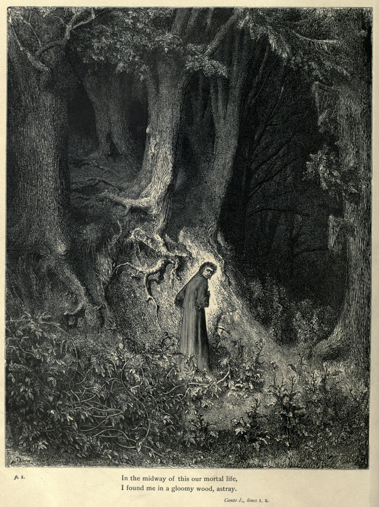
어두운 숲 · 귀스타브 도레, 1861 · 지옥편 제1곡, 길 잃은 단테 [Wikimedia · Public Domain]
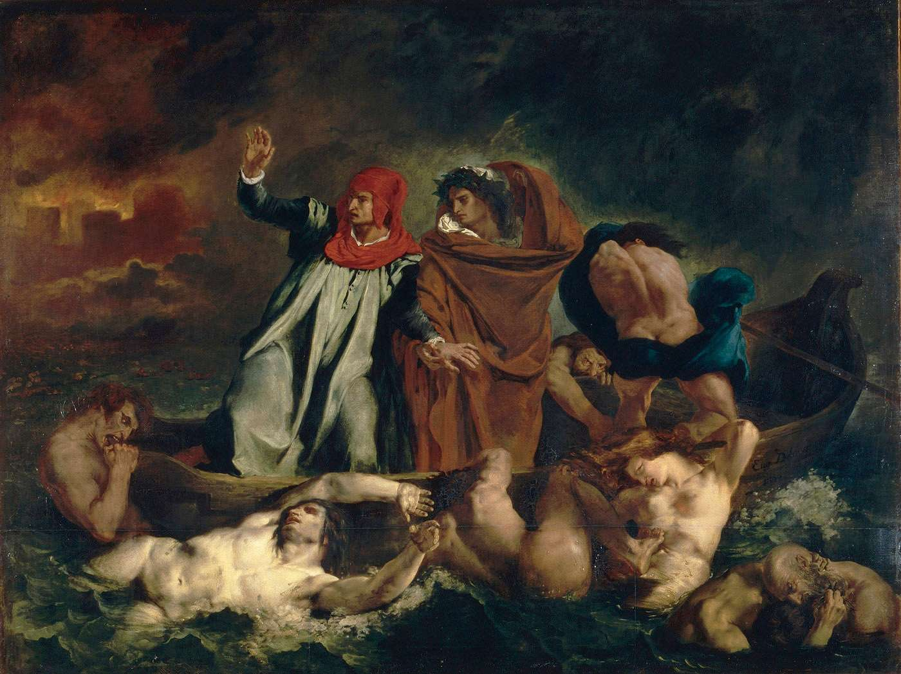
단테의 배 · 외젠 들라크루아, 1822 · 루브르 · 스틱스 강을 건너는 단테와 베르길리우스 [Wikimedia · Public Domain]
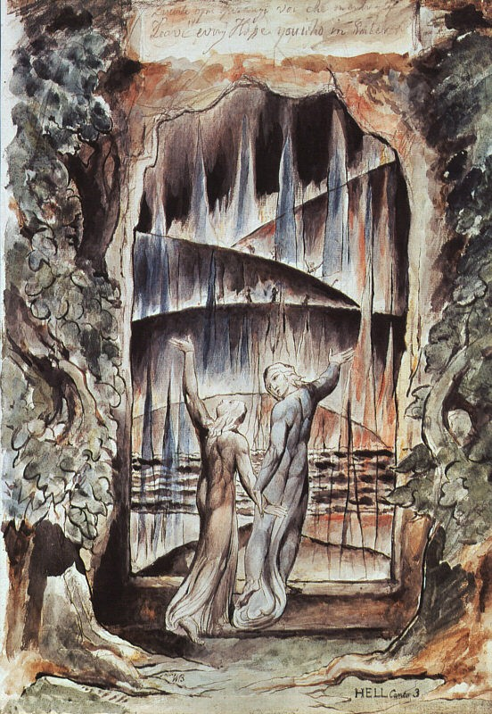
지옥문 앞의 단테와 베르길리우스 · 윌리엄 블레이크, 1824-27 · 영국 낭만주의의 환상적 해석 [Wikimedia · Public Domain]
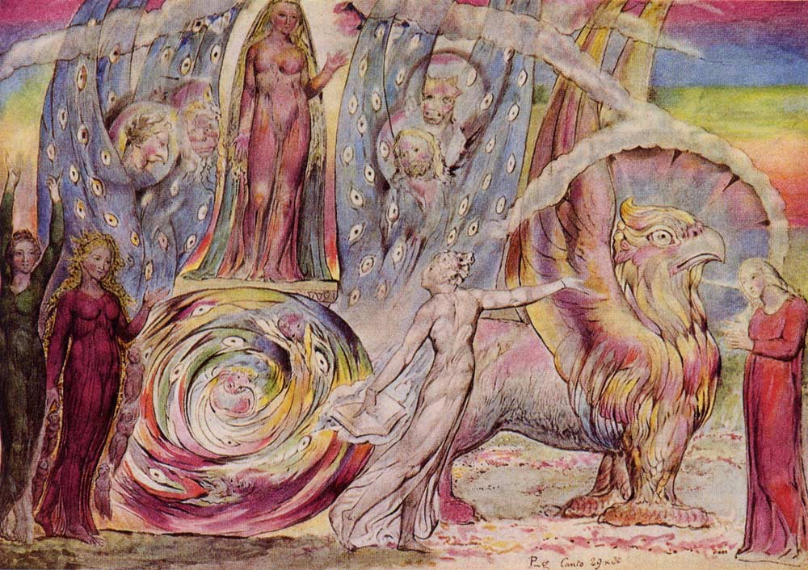
단테에게 말하는 베아트리체 · 윌리엄 블레이크 · 연옥편 제30곡, 지상 낙원의 재회 [Wikimedia · Public Domain]
단테의 우주는 죄가 무거울수록 땅속 깊이 떨어지고, 정화될수록 산을 오르며, 은총이 클수록 하늘 높이 빛을 향해 솟는 거대한 도덕적 기하학이었다.
VIII
1318-1321 · 라벤나
라벤나의 마지막
강의 듣기
한 시인이 필생의 대작을 거의 다 마친 채 라벤나에서 눈을 감았다. 그는 끝내 고향 땅을 밟지 못했다.
망명의 마지막 몇 해를 단테는 라벤나에서 보냈다. 1318년경, 이 고도(古都)의 영주 귀도 노벨로 다 폴렌타가 그를 초청했다. 라벤나는 한때 서로마 제국 말기와 동고트·비잔틴 시대의 수도였던 도시로, 황금 모자이크가 빛나는 산비탈레 성당과 갈라 플라치디아 영묘가 단테를 둘러쌌다. 그는 이곳에서 자식들과 제자들에 둘러싸여 비교적 평온한 말년을 누렸고, 무엇보다 『신곡』의 마지막 편인 천국편을 완성했다. 추방의 끝자락에서 그는 비로소 안식에 가까운 시간을 얻었다.
이 마지막 시기에 단테가 베르길리우스의 무덤이 있는 도시 가까이에 머물렀다는 사실은 의미심장하다. 평생 베르길리우스를 안내자로 삼고 그를 "나의 스승이자 나의 작가"라 부른 시인이, 그 로마 시인의 그림자가 짙게 드리운 이탈리아 동부에서 생을 마감한 것이다. 또한 라벤나에서 그는 마지막까지 시를 가르치고 라틴어로 목가시를 주고받으며 문학적 교류를 이어 갔다. 죽음을 앞둔 노시인의 펜은 멈추지 않았다. 그는 끝까지 시인이었다.
1321년 9월, 단테는 귀도 노벨로의 사절로 베네치아에 파견되었다. 라벤나와 베네치아 사이의 분쟁을 조정하기 위해서였다. 임무를 마치고 돌아오는 길, 아드리아 해안의 습지대를 지나다 그는 말라리아에 걸렸다. 당시 이탈리아 저지대의 풍토병이었다. 라벤나로 돌아온 지 얼마 지나지 않아 병세가 깊어졌고, 1321년 9월 13일에서 14일로 넘어가는 밤에 그는 숨을 거두었다. 향년 쉰여섯. 그는 거의 죽음과 동시에 평생의 대작을 마친 셈이었다. 외교라는 세속의 임무를 수행하다 얻은 병이 그의 마지막이 된 것은, 평생 정치와 시 사이를 오간 그의 생을 닮은 결말이었다.
귀도 노벨로는 단테의 장례를 성대히 치르고, 산 피에르 마조레 성당(지금의 산 프란체스코) 곁에 그를 묻었다. 시인의 머리에는 그가 평생 갈망했으나 살아서는 받지 못한 월계관이 비로소 얹혔다. 추방당한 자가 죽어서야 시인의 영예를 받은 것이다. 그가 그토록 피렌체의 세례당에서 월계관을 받기를 꿈꾸었다는 사실을 떠올리면, 이 사후의 대관은 영광이자 또 하나의 비애였다.
단테는 천국편 제25곡에서 그 꿈을 직접 노래한 바 있다. 언젠가 자신의 "신성한 시"가 완성되면, 자신을 추방한 그 잔혹한 도시가 마음을 돌려, 자신이 세례받은 산 조반니 세례당에서 시인의 월계관을 쓰게 되기를 바란다고. 그것은 단순한 명예욕이 아니라 결백의 회복에 대한 갈망이었다. 죄인으로 쫓겨난 자가 영예로운 시인으로 귀향하는 것, 그것만이 그의 추방을 정당하게 끝맺는 길이었다. 그러나 그 꿈은 끝내 이루어지지 않았다. 그는 고향의 세례당이 아니라 망명지 라벤나의 무덤에서 월계관을 받았다.
단테가 남긴 자식들은 아버지의 유산을 지켰다. 두 아들 야코포와 피에트로는 모두 『신곡』의 주석가가 되어, 아버지가 남긴 시의 난해한 대목들을 풀이하는 초기 주석서를 썼다. 특히 피에트로의 라틴어 주석은 오늘날까지 단테 연구의 귀중한 자료로 남아 있다. 한 시인의 가장 충실한 독자가 그의 자식들이었던 셈이다. 추방의 고난 속에서도 단테의 시는 이렇게 가문 안에서, 그리고 곧 온 이탈리아에서 살아남아 불멸의 길로 들어섰다.
드높은 노래로 운명과 죽음을 노래한 시인 단테가 여기 잠들다. 그는 그를 낳은 어미에게 버림받았으나, 사랑 없는 망명에서 라벤나가 그를 거두었노라.
단테의 라벤나 묘비명(베르나르도 카날레 작, 14세기)
피렌체는 뒤늦게 후회했다. 시인이 죽은 뒤 수십 년이 지나도록, 피렌체는 거듭 라벤나에 단테의 유해를 돌려 달라 청했다. 1396년, 1429년, 그리고 메디치 가문이 권력을 쥔 16세기에도 요청은 이어졌다. 1519년에는 교황 레오 10세(메디치 가문 출신)의 허가까지 받아 피렌체 사절단이 라벤나로 가 단테의 석관을 열었다. 그런데 관은 비어 있었다.
비밀은 약 350년 뒤에야 풀렸다. 1865년 단테 탄생 600주년 기념 공사 중, 라벤나의 한 벽에서 단테의 유골이 담긴 나무 상자가 발견되었다. 프란체스코회 수사들이 피렌체에 유해를 빼앗기지 않으려고, 석관에서 뼈를 몰래 빼내 수도원 벽에 숨겨 둔 것이었다. 한 도시가 살아서 추방한 시인을, 죽어서까지 다른 도시에 빼앗기지 않으려는 수백 년에 걸친 줄다리기였다.
오늘날에도 단테의 유해는 라벤나에 있다. 피렌체의 산타 크로체 성당에는 웅장한 단테 기념비가 서 있지만, 그 아래는 비어 있다. 시인을 추방한 도시가 끝내 그의 뼈를 돌려받지 못한 채 빈 무덤만 지키는 이 아이러니는, 단테의 생애 전체에 대한 가장 정확한 비유처럼 보인다. 살아서 거부당하고 죽어서 모셔지려는 시인, 그러나 그 몸조차 끝내 고향에 닿지 못한 시인.
하나의 작은 화해의 몸짓은 있었다. 1829년 피렌체는 산타 크로체에 단테의 기념 묘를 세웠고, 1865년 탄생 600주년에는 시뇨리아 광장에 거대한 단테 동상을 세워 도시의 중심에 그를 모셨다. 그리고 2008년, 피렌체 시의회는 706년 만에 단테에 대한 사형 선고를 공식적으로 철회했다. 비록 표결에서 반대표도 나왔지만, 한 도시가 자신이 쫓아낸 시인에게 뒤늦게나마 사죄한 상징적 사건이었다. 그러나 라벤나는 여전히 유골 반환을 거부한다. 매년 단테 기일이면 피렌체는 라벤나의 무덤에 켤 기름을 보내는데, 이는 빚을 갚는 의례이자 영영 채울 수 없는 빈자리에 대한 인정이기도 하다.
단테의 무덤 자체가 하나의 순례지가 되었다. 시인 바이런과 오스카 와일드가 이곳을 찾아 경의를 표했고, 오늘날에도 세계 각지의 독자들이 라벤나의 작은 신고전주의 묘당을 찾는다. 추방당해 고향에 묻히지 못한 시인의 무덤이, 도리어 고향을 잃은 모든 이가 찾아오는 성소가 된 것이다. 단테의 유해를 둘러싼 피렌체와 라벤나의 600년 다툼은 역설적으로 그의 불멸을 가장 잘 증언한다. 두 도시가 한 시인의 뼈 한 조각을 두고 다툴 만큼, 그는 죽어서 더욱 크게 살아났다.
단테가 죽은 라벤나라는 도시 또한 그의 마지막 안식처로서 의미가 깊다. 한때 서로마 제국의 마지막 수도였고 비잔틴 총독부가 있던 이 도시의 황금 모자이크는, 천국편에서 단테가 묘사한 눈부신 빛의 향연과 묘하게 공명한다. 인간 영혼이 빛으로 가득한 천상으로 오르는 시를 완성한 시인이, 벽마다 황금빛 천사와 성인이 빛나는 도시에서 눈을 감은 것은 우연 이상의 시적 정합처럼 보인다. 추방의 어둠 속을 평생 걸었던 그가 마지막에 빛의 도시에 닿은 것이다.
곁가지 1 — 사라졌다 되찾은 마지막 13곡
보카치오가 전하는 유명한 일화가 있다. 단테가 죽은 뒤, 천국편의 마지막 13곡 원고가 어디에도 없었다. 여덟 달이 지나도록 아들들이 찾지 못해 사람들은 작품이 미완으로 끝났다 여겼다. 그러던 어느 날 밤, 아들 야코포의 꿈에 흰옷 입은 아버지가 나타나 침실 벽의 한 지점을 가리켰다. 깨어나 그 자리의 벽을 헐자, 곰팡이 핀 원고 뭉치가 숨겨져 있었고, 거기에 잃어버린 마지막 곡들이 있었다. 사실 여부는 알 수 없으나, 죽음으로 잠시 잃었던 시를 꿈을 통해 되찾았다는 이 이야기는 그 자체로 한 편의 시다.
[Source] Boccaccio, 『Trattatello in laude di Dante』.
곁가지 2 — 도둑맞고 숨겨진 시인의 뼈
단테의 유골은 그 뒤에도 평온하지 못했다. 2차 세계대전 중 연합군의 공습이 라벤나를 위협하자, 1944년 단테의 뼈는 묘소 곁 정원에 파묻혀 약 1년간 숨겨졌다가 종전 후 제자리로 돌아왔다. 그 매장 지점은 오늘날 작은 봉분으로 표시되어 있다. 또한 19세기 발견 당시 유골 일부가 따로 보관되다 분실·재발견되는 소동도 있었다. 살아서 쫓겨 다니고 죽어서 뼈마저 거듭 옮겨진 시인. 그의 유해의 여정은 그가 노래한 영혼들의 순례를 닮았다.
[Source] Tomba di Dante(라벤나) 안내; G. Gardner, 『Dante』.
단테의 죽음은 한 시대의 끝이자 시작이었다. 그가 눈을 감은 지 한 세대도 지나지 않아, 같은 토스카나에서 페트라르카가 인문주의의 깃발을 들고 보카치오가 산문 문학의 새 길을 열었다. 흔히 "세 왕관(tre corone)"이라 불리는 이 세 사람이 이탈리아 르네상스 문학의 토대를 놓았고, 그 가장 앞자리에 단테가 있었다. 중세의 마지막 위대한 시인이자 르네상스의 첫 선구자. 단테는 두 시대에 한 발씩 걸친 채, 저무는 세계의 신학과 떠오르는 세계의 인간 정신을 한 작품 안에 끌어안았다. 그래서 그를 읽는 일은 곧 한 문명이 다른 문명으로 건너가는 그 위대한 순간을 목격하는 일이다.
피렌체
단테 사후 피렌체는 르네상스의 요람으로 떠오른다. 한 세대 뒤 페트라르카와 보카치오가, 다시 한 세기 뒤 메디치 가문 아래 레오나르도와 미켈란젤로가 등장한다. 추방한 시인을 끝내 르네상스의 선구로 추앙하게 된다.
아비뇽
교황청은 여전히 아비뇽에 머물렀다(아비뇽 유수). 단테가 통렬히 비판한 교회의 세속화가 한창이었다.
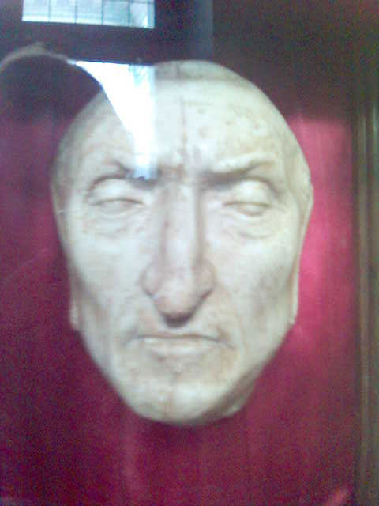
단테의 이른바 데스마스크 · 피렌체 베키오 궁전 소장 · 실제로는 후대에 제작된 것으로 보이나, 시인의 얼굴에 대한 집단 기억을 담고 있다 [Wikimedia · Public Domain]
IX
Alia visione · 후대
다른 시선 — 칠백 년의 메아리
강의 듣기
한 망명자의 시가 700년을 건너 수많은 사람들에게 거울이 되었다. 시대마다, 나라마다 그들은 저마다의 단테를 읽었다.
단테는 죽었으나 그의 시는 곧장 살아 움직였다. 그가 숨을 거둔 직후부터 이탈리아 도시들은 『신곡』을 공개 강독하기 시작했고, 1373년 피렌체는 그토록 추방했던 시인을 위해 공식 강좌를 열어 보카치오에게 맡겼다. 한 세대 만에 추방자는 도시의 자랑이 되었다. 이후 700년 동안 단테는 시대마다 새로운 얼굴로 다시 태어났다. 르네상스는 그에게서 인간 정신의 위엄을, 낭만주의는 환상과 정념을, 20세기는 폐허와 구원을 읽었다. 한 작품이 시대의 거울이 되어, 읽는 자마다 자기 시대의 얼굴을 거기서 보았다.
단테 수용의 역사는 그 자체로 서양 정신사의 축소판이다. 페트라르카와 보카치오는 그를 이탈리아 문학의 시조로 떠받들었고, 르네상스 인문주의자들은 그의 라틴어 저작과 백과사전적 지식을 연구했다. 그러나 신고전주의 시대에는 그의 "거칠고 야만적인" 중세성이 한때 외면받기도 했다. 단테가 다시 정상의 자리로 복귀한 것은 19세기 낭만주의 덕분이었다. 블레이크, 도레, 들라크루아 같은 예술가들이 그의 환상 세계에 매혹되었고, 영국의 라파엘 전파는 베아트리체를 거듭 화폭에 담았다. 시대마다 단테는 버려지고 다시 발견되기를 반복하며 살아남았다.
20세기에 단테는 망명과 고난의 시인으로 새롭게 읽혔다. 두 차례의 세계대전과 전체주의의 폭력을 겪은 세기에, 고향에서 쫓겨나 인간 영혼의 지옥을 통과한 그의 이야기는 전례 없는 공감을 얻었다. 추방당한 지식인, 수용소의 생존자, 전쟁 난민 들이 저마다 단테에게서 자신을 보았다. 한 중세 시인이 가장 현대적인 시인이 된 역설이다. 길을 잃은 모든 인간, 어둠 속에서 빛을 찾는 모든 영혼에게 『신곡』은 여전히 살아 있는 지도였다.
오늘날 단테는 학문의 영역을 넘어 대중문화 속에서도 끝없이 되살아난다. 영화와 비디오 게임은 그의 지옥을 무대로 삼고, 소설가들은 그의 암호 같은 상징을 추리물의 소재로 빌려 온다. 미국 시인 헨리 워즈워스 롱펠로는 19세기에 『신곡』을 영어로 옮겼고, 그 번역이 신대륙에 단테 열풍을 불러왔다. 오늘날 전 세계 거의 모든 주요 언어로 『신곡』이 번역되어 있으며, 단테 연구는 하나의 독립된 학문 분야를 이룬다. 한 망명자가 절망 속에서 토스카나 속어로 써 내려간 시가, 700년 뒤 인류 전체의 공동 유산이 된 것이다.
단테가 우리에게 끝내 남기는 것은 한 폭의 풍경이다. 어두운 숲에서 길을 잃은 한 사람이, 별빛을 향해 산을 오르고, 지옥의 밑바닥까지 내려갔다가, 마침내 빛으로 가득한 하늘로 솟아오르는 풍경. 그것은 한 중세 그리스도인의 여행이면서, 동시에 절망에서 희망으로, 어둠에서 빛으로 나아가려는 모든 인간의 영원한 이야기다. 그래서 단테는 종교가 다르고 시대가 다른 독자에게도 여전히 말을 건다. 길을 잃었거든, 고개를 들어 별을 보라고. 그리고 한 걸음씩, 어둠을 빠져나가 다시 별을 보러 가자고.
곁가지 1 — T. S. 엘리엇의 단테
20세기 영시의 거장 T. S. 엘리엇은 단테에게 거의 종교적인 빚을 졌다. 그는 "단테와 셰익스피어가 그들 사이에 현대 세계를 나눠 가졌으며, 제삼자는 없다"고 단언했다. 엘리엇의 대표작 『황무지』에는 지옥편의 구절이 직접 인용된다. 런던 다리를 건너는 군중을 보며 그는 "죽음이 이토록 많은 사람을 망쳐 놓았으리라고는 생각지 못했다"고 적는데, 이는 지옥문을 지난 무기력한 영혼들을 묘사한 단테의 행을 그대로 옮긴 것이다. 현대 도시의 정신적 황무지를 그리는 데 단테의 지옥보다 더 정확한 거울은 없었다.
[Source] T. S. Eliot, 『Dante』(1929); 『The Waste Land』(1922); Dante, 『Inferno』 III곡.
곁가지 2 — 보르헤스의 끝없는 경탄
아르헨티나의 작가 호르헤 루이스 보르헤스는 『신곡』을 "문학이 도달한 최고봉이자 모든 문학"이라 불렀다. 그는 부에노스아이레스의 전차 안에서 이탈리아어·영어 대역본으로 한 곡씩 읽어 가며 단테를 처음 만났다고 회고한다. 1982년 그는 『단테에 관한 아홉 편의 에세이』를 묶어 냈다. 시력을 잃어 가던 그에게, 빛에서 빛으로 올라 마침내 모든 것을 보는 천국편은 각별한 의미였다. 보지 못하는 사람이 가장 밝은 시를 평생의 벗으로 삼았다.
[Source] J. L. Borges, 『Nueve ensayos dantescos』(1982).
곁가지 3 — 아우슈비츠의 율리시스 곡
이탈리아 화학자이자 작가 프리모 레비는 아우슈비츠 수용소에서 단테를 떠올렸다. 어느 날 수프를 받으러 가는 길에, 그는 동료 프랑스인 피콜로에게 이탈리아어를 가르치려다 문득 지옥편 제26곡, 율리시스가 마지막 항해에서 동료들을 독려하는 대목을 기억해 냈다. "그대들은 짐승처럼 살라고 태어난 것이 아니라, 덕과 앎을 좇으라고 태어났노라." 굶주림과 죽음의 한복판에서, 700년 전의 시 한 구절이 두 사람에게 인간으로 남을 마지막 존엄을 일깨웠다. 시가 어떻게 사람을 살리는지에 대한 가장 강력한 증언이다.
[Source] Primo Levi, 『Se questo è un uomo(이것이 인간인가)』(1947), "율리시스의 노래" 장.
곁가지 4 — 무함마드의 자리, 단테의 한계
『신곡』에는 오늘날 가장 비판받는 대목이 있다. 단테는 지옥 여덟째 고리의 "분열을 일으킨 자들" 구덩이에 이슬람의 예언자 무함마드를 두고, 몸이 갈라지는 끔찍한 형벌을 가한다. 십자군 시대 그리스도교 세계관의 한계가 가장 노골적으로 드러난 자리다. 2013년 시인 클라이브 제임스는 새 번역에서 이 대목을 두고, 단테조차 자기 시대의 종교적 적대를 끝내 넘지 못했다고 평했다. 그러나 같은 단테가 살라딘과 이슬람 철학자들을 림보의 고결한 자리에 올렸다는 점을 함께 보아야 한다. 한 위대한 정신 안에서도 편견과 관용이 모순된 채 공존했던 것이다. 실제로 일부 현대 무슬림 사회에서는 이 대목 때문에 『신곡』의 출판이 제한되거나 삭제되기도 했다.
[Source] Dante, 『Inferno』 XXVIII곡; Clive James 역 『The Divine Comedy』(2013); M. Asín Palacios(1919).
곁가지 5 — 그림으로 본 단테: 보티첼리에서 도레까지
『신곡』만큼 화가들을 사로잡은 시는 드물다. 산드로 보티첼리는 양피지 위에 100곡 전체의 삽화를 그렸고, 윌리엄 블레이크는 죽기 직전까지 102점의 환상적 수채화에 매달렸다. 외젠 들라크루아의 『단테의 배』는 낭만주의 회화의 문을 열었고, 19세기 귀스타브 도레의 목판화는 오늘날까지 가장 널리 알려진 신곡의 이미지로 남았다. 오귀스트 로댕의 거대한 조각 『지옥문』과 그 일부인 『생각하는 사람』마저 본래는 단테를 형상화한 것이었다. 한 편의 시가 회화·조각·음악·영화로 700년간 끝없이 다시 태어났다.
[Source] S. Botticelli 신곡 삽화집; G. Doré(1861); A. Rodin, 『La Porte de l'Enfer』.
곁가지 6 — 한국에 닿은 단테
한국에 단테가 본격적으로 소개된 것은 20세기다. 일제강점기에 일본어 중역으로 일부가 전해진 뒤, 1950~60년대부터 이탈리아어 원전에 기댄 직접 번역이 시도되었다. 오늘날에는 여러 종의 우리말 『신곡』 완역본이 나와 있어, 700년 전 피렌체 망명자의 시가 한국 독자의 책상 위에 놓이게 되었다. 한 언어의 경계를 넘어 인간 영혼의 보편적 여정을 노래했기에, 단테는 어느 나라 말로 옮겨져도 여전히 살아 있다.
[Source] 한국 단테학회 자료; 국내 『신곡』 번역본 해제(한형곤·박상진 등).
곁가지 7 — 오늘의 교훈: 추방을 작품으로
단테가 우리에게 남긴 가장 깊은 가르침은, 가장 큰 상실이 가장 큰 창조의 자리가 될 수 있다는 사실이다. 그는 고향을 잃었고 가족과 헤어졌으며 평생 남의 집을 전전했다. 만약 그가 피렌체에서 안락한 정치인으로 늙었다면 『신곡』은 결코 태어나지 못했을 것이다. 추방이라는 절망을 그는 온 우주를 무대로 삼는 시로 바꾸어 냈다. 첫째, 우리를 무너뜨린 사건이 곧 우리를 빚어내는 재료가 될 수 있다는 것. 둘째, 모욕적 타협으로 돌아가느니 진리와 별을 바라보는 자존을 택한 그의 단호함. 700년이 지난 지금도, 길을 잃은 누군가에게 단테는 어두운 숲에서도 위를 올려다보라고 말한다.
[Source] Dante, 『Epistola XII』; 『신곡』 천국편 33곡; J. Took, 『Dante』(2020).
유럽 전역
단테는 국경을 넘어 읽혔다. 영국의 초서가 그를 인용했고, 독일 낭만주의가 그를 재발견했으며, 러시아의 만델슈탐은 스탈린 치하 유배지에서 『단테에 관한 대화』를 썼다. 추방당한 시인은 다른 추방자들의 수호성인이 되었다.
현대
2021년 단테 서거 700주년에 이탈리아는 "단테의 날(3월 25일)"을 국가 기념일로 정했다. 추방했던 도시의 후예들이 이제 그를 국민의 시인으로 기린다.